| GLM/GAM Decision Map (Applied Linguistics Data) | ||||
| Research Question | Outcome Type | Start Here | Escalate to GAM When... | Main Output |
|---|---|---|---|---|
| 助言関係の有無を予測 | 0/1 | Binomial GLM | 連続予測子に閾値/飽和が疑われる | OR + 予測確率 |
| 協働回数の差を比較 | count | Poisson GLM | 非線形が疑われる / 残差構造が複雑 | IRR + 予測件数 |
| 協働強度の差を説明 | positive continuous | Gamma GLM | 連続予測子の形が直線でない | 倍率 + 予測平均 |
7 一般化線形モデル・一般化加法モデル
8 はじめに
英語教育研究では、従属変数が正規分布を仮定しにくい場面が多くあります。典型例は、 正誤（0/1）、相互作用回数（count）、正の連続量です。これらを 通常の線形回帰で処理すると、分布仮定と解釈がずれやすくなります。
この問題に対する標準的な枠組みが 一般化線形モデル（GLM）(Nelder & Wedderburn, 1972) であり、 非線形効果を柔軟に扱う拡張が 一般化加法モデル（GAM）(Hastie & Tibshirani, 1990; Wood, 2017, 2020) です。
本章は、理論説明を最小限にし、実データでそのまま再利用できる実務手順に重点を置きます。
5章と6章の使い分け
| 状況 | 使う章 |
|---|---|
| 観測が独立（反復測定なし） | 本章（GLM / GAM） |
| 同じ学習者から複数観測がある | 6章（GLMM） |
| 独立性 + 非線形の両方が問題 | GAMM（6章末尾で概説） |
迷ったら、まず本章で GLM/GAM を試し、章末の「6章への接続」で GLMM との比較を確認してください。
この章の到達目標
- 分布とリンク関数を、研究目的に応じて選べる。
- GLM と GAM を同じ研究課題で比較し、採用理由を説明できる。
- 係数を OR / IRR / 倍率に変換し、応答スケール予測で可視化できる。
- 章内コードをそのままテンプレートとして使える。
Conventions
- Figure labels/titles are in English to avoid mojibake across environments.
- All code chunks are R (```{r}). HTML/CSS is used only for chapter styling.
- 反復測定や被験者・項目ランダム効果が中核の設計では、GLMM/GAMMへ拡張する。
8.1 分析判断の早見表
9 理論はここだけ押さえる
GLM を一言でまとめると、「3ステップのレシピ」です。
- アウトカムの形を決める（2値なら binomial、カウントなら Poisson、正の連続量なら Gamma）
- リンク関数という橋を選ぶ（アウトカムの期待値と線形式をつなぐ変換）
- 最尤法で推定する（最小二乗法の代わりに、データの「起こりやすさ」を最大化するパラメータを探す）
この3要素を数式で書くと以下のようになります(Nelder & Wedderburn, 1972)。
- 線形予測子: \(\eta_i = \mathbf{x}_i^\top\beta\)
- リンク関数: \(g(\mu_i)=\eta_i\)
- 分布: \(Y_i\) の分布（binomial, Poisson, Gamma など）
GAM は GLM の線形項を平滑関数 \(f(\cdot)\) に置き換え、 平滑化パラメータを REML 等で推定します(Wood, 2011, 2017)。
\[ g(\mu_i)=\beta_0 + f_1(x_{i1}) + \cdots + f_p(x_{ip}) \]
実装仕様は stats::glm / stats::family / mgcv の公式ドキュメントを参照してください (R Core Team, 2026b, 2026a; Wood, 2026)。
9.1 モデル比較のための尤度（必須）
モデル比較を説明するには、尤度を明示しておく必要があります。
\[ L(\theta \mid y) = \prod_{i=1}^{n} f(y_i \mid \theta), \quad \ell(\theta) = \log L(\theta \mid y) \]
- 尤度 \(L\): 「このモデルが観測データをどれだけ起こしやすいか」
- 対数尤度 \(\ell\): 尤度を足し算で扱える形にしたもの
実務でよく使う比較指標は以下です(Burnham & Anderson, 2002)。
\[ \mathrm{AIC} = -2\ell + 2k,\quad \mathrm{BIC} = -2\ell + k\log n \]
- \(k\): 推定パラメータ数
- 小さい AIC/BIC は、適合と複雑さのバランスがよいことを示す
実務での AIC/BIC の読み方
2つのモデルの AIC を比較するとき、差（ΔAIC）の大きさが判断材料になります(Burnham & Anderson, 2002)。
| ΔAIC | 解釈 |
|---|---|
| 0〜2 | ほぼ同等。どちらを選んでも大きな差はない |
| 4〜7 | 中程度の証拠。AIC が小さいモデルがやや優勢 |
| 10 以上 | 強い証拠。AIC が大きいモデルは支持されにくい |
BIC はサンプルサイズが大きいとき AIC よりも複雑なモデルにペナルティを課すため、 AIC と BIC が同じ方向を向いていれば判断は明快です。
入れ子モデルなら尤度比検定（LRT）も使えます。
\[ 2\{\ell(\text{full})-\ell(\text{reduced})\} \sim \chi^2_{\Delta df} \]
LRT を使うときの条件
- 同じ分布族・同じリンク関数・同じデータで比較する。
- reduced と full が入れ子であることを確認する。
- GAM では平滑化推定が入るため、GLMのLRTと同じ感覚で乱用しない。 本章では GAM 比較は主に AIC /
compare_performance()/gam.check()で判断する。
LRT と AIC/BIC の使い分け
- LRT: 入れ子モデル（一方が他方の特殊ケース）でのみ使用可能。p 値を返す。
- AIC/BIC: 入れ子でなくても使用可能。異なる分布族の比較にも使える場合がある（ただし同じデータ・同じ尤度の定義が前提）。
- 両方が同じ結論を指すなら、判断は明快です。食い違う場合は、理論的な整合性と診断結果を加味して最終判断してください。
9.2 モデル前提チェックリスト（GLM/GAM）
最もよくある間違い
「アウトカムの正規性」を Shapiro-Wilk 検定で確認する方が多いですが、 GLM ではアウトカムの正規性は仮定していません。 分布は family 引数で指定するものであり、2値データが正規分布に従わないのは当然です。 確認すべきは「family がアウトカムの型と整合しているか」と「残差に大きな問題がないか」です。
GLM/GAM の前提は「正規性」だけではありません。実務では次を最低限確認します。
outcomeとfamily/linkが整合しているか（binary/count/positive）。- 観測の独立性が成り立つか（反復・階層があるなら GLMM/GAMM へ）。
- GLM の線形項がリンクスケールで妥当か（不自然なら GAM を検討）。
- count で過分散がないか（Poisson 過信を避ける）。
- GAM の平滑項が過不足ないか（
gam.check()の k-index / edf）。 - 共線性が強すぎないか（推定不安定の回避）。
前提確認の実装対応（本章）
- 形状と平滑:
gam.check(),concurvity() - 分布妥当性:
check_overdispersion(),check_model() - 共線性:
check_collinearity() - 階層性: 章末の「6章への接続」で GLMM 比較を実演
9.3 2値データのリンク関数ガイド（詳細）
2値アウトカムでは、同じ説明変数でもリンク関数の選び方で 「係数の意味」「尾部の当てはまり」「予測確率の形」が変わります。 stats::binomial() では logit, probit, cloglog, cauchit, log, identity が指定できます(R Core Team, 2026a, 2026c)。
| Link | \(g(p)\) | \(g^{-1}(\\eta)\) | 係数の主な解釈 | 実務メモ |
|---|---|---|---|---|
| logit | \(\\log\\{p/(1-p)\\}\) | \(\\mathrm{logit}^{-1}(\\eta)\) | \(\\exp(\\beta)\) はオッズ比（OR） | 最も標準的。解釈がしやすい |
| probit | \(\\Phi^{-1}(p)\) | \(\\Phi(\\eta)\) | 潜在正規尺度での変化量 | logit と予測は近いが係数尺度は異なる |
| cloglog | \(\\log\\{-\\log(1-p)\\}\) | \(1-\\exp\\{-\\exp(\\eta)\\}\) | 非対称リンク | 稀少イベント/離散時間ハザードで有用(Prentice & Gloeckler, 1978) |
| log-log | \(-\\log\\{-\\log(p)\\}\) | \(\\exp\\{-\\exp(-\\eta)\\}\) | cloglog の鏡像 | 事象定義を反転したい場合に有用(Yee, 2026) |
| cauchit | \(\\tan\\{\\pi(p-1/2)\\}\) | \(\\arctan(\\eta)/\\pi + 1/2\) | 重尾リンク | 外れ値的な線形予測子に比較的頑健 |
| log | \(\\log(p)\) | \(\\exp(\\eta)\) | \(\\exp(\\beta)\) はリスク比に近い解釈 | 確率>1の制約に注意 |
| identity | \(p\) | \(\\eta\) | リスク差に近い | [0,1] 制約を満たしにくく通常は非推奨 |
logit と probit の違い（誤解しやすい点）
- 予測確率の形はしばしば似るが、係数尺度は同一ではない。
- 係数比較では「どちらが有意か」より、応答スケール予測で比較する方が安全。
exp(beta)を OR として解釈できるのは logit のときのみ。
log-log について
log-log は cloglog の反転関係にあり、VGAM 文書でも 「0/1の定義を反転すると実質的に loglog が適用される」ことが示されています (Yee, 2026)。stats::binomial() には loglog 名が直接はないため、 必要なら VGAM か目的変数の符号反転で対応します。
10 実行前ガイド（実務版）
- 研究質問を「確率・件数・平均」のどれかに落とし込む。
- まず GLM を当てる（最小構成）。
- 過分散・残差・予測妥当性を確認する。
- 連続予測子の形が怪しい場合だけ GAM に拡張する。
- 係数はリンクスケール、図は応答スケールで報告する。
11 パッケージとデータ準備
コード
pacman::p_load(
tidyverse,
mgcv,
performance,
emmeans,
sjPlot,
broom,
gt
)
theme_set(theme_bw())
set.seed(20260220)
make_ic_table <- function(...) {
models <- list(...)
names(models) |>
purrr::map_dfr(function(nm) {
m <- models[[nm]]
tibble(
model = nm,
AIC = suppressWarnings(AIC(m)),
BIC = suppressWarnings(BIC(m)),
deviance = suppressWarnings(deviance(m))
)
}) |>
arrange(AIC)
}コード
# collaboration network (60 learners)
nodes_collab <- readr::read_csv(
"data/network/nodes_collaboration.csv",
show_col_types = FALSE
)
edges_collab <- readr::read_csv(
"data/network/edges_collaboration.csv",
show_col_types = FALSE
)
# directed advice network (30 learners)
nodes_advice <- readr::read_csv(
"data/network/nodes.csv",
show_col_types = FALSE
)
edges_advice <- readr::read_csv(
"data/network/edges_directed_advice.csv",
show_col_types = FALSE
)
prof_levels <- c("A2", "B1", "B2")
prof_map <- c(A2 = 1, B1 = 2, B2 = 3)
nodes_collab <- nodes_collab |>
mutate(
class = factor(class),
proficiency = factor(proficiency, levels = prof_levels),
prof_num = unname(prof_map[as.character(proficiency)]),
baseline_score_sc = as.numeric(scale(baseline_score))
)
# node-level collaboration metrics for later models
node_metrics <- bind_rows(
edges_collab |>
transmute(id = from, partner = to, w = weight),
edges_collab |>
transmute(id = to, partner = from, w = weight)
) |>
group_by(id) |>
summarise(
collab_strength = sum(w),
collab_degree = n_distinct(partner),
.groups = "drop"
)
dat_pos <- nodes_collab |>
left_join(node_metrics, by = "id") |>
mutate(
collab_strength = replace_na(collab_strength, 0),
collab_degree = replace_na(collab_degree, 0)
)
summary(dat_pos$collab_strength) Min. 1st Qu. Median Mean 3rd Qu. Max.
1.00 7.00 10.50 12.10 16.25 29.00 12 ケース1: 助言関係の有無（Binomial GLM/GAM）
目的: 2人組の特徴（同クラスか、習熟度差、ベースライン差）で、 助言関係（有/無）を予測します。
12.1 モデル用データの作成（実データ）
ここでは、助言ネットワーク（30名）の全有向ペア（sender → receiver）を作成します。 各行が1つの有向ペアに対応し、アウトカム tie は実際に助言関係が観測されたら 1、そうでなければ 0 です。 予測子には、ペアレベルの特徴量を含めます。
same_class: 同じクラスに所属していれば 1prof_gap: 習熟度の絶対差（0, 1, 2）score_from_sc/score_to_sc: 送信者・受信者のベースライン得点（標準化済み）score_gap: 得点の絶対差
コード
# advice nodes (30名) に baseline score を結合
nodes_advice <- nodes_advice |>
left_join(
nodes_collab |>
dplyr::select(id, baseline_score, baseline_score_sc),
by = "id"
) |>
mutate(
class = factor(class),
proficiency = factor(proficiency, levels = prof_levels),
prof_num = unname(prof_map[as.character(proficiency)])
)
# 全有向ペア（from != to）を作成
dat_bin <- tidyr::crossing(from = nodes_advice$id, to = nodes_advice$id) |>
filter(from != to) |>
left_join(
nodes_advice |>
dplyr::select(
from = id,
class_from = class,
prof_from = proficiency,
prof_num_from = prof_num,
score_from_sc = baseline_score_sc
),
by = "from"
) |>
left_join(
nodes_advice |>
dplyr::select(
to = id,
class_to = class,
prof_to = proficiency,
prof_num_to = prof_num,
score_to_sc = baseline_score_sc
),
by = "to"
) |>
mutate(
same_class = as.integer(class_from == class_to),
prof_gap = abs(prof_num_from - prof_num_to),
score_gap = abs(score_from_sc - score_to_sc),
tie = as.integer(paste(from, to) %in% paste(edges_advice$from, edges_advice$to))
)
c(n_rows = nrow(dat_bin), n_ties = sum(dat_bin$tie))n_rows n_ties
870 154 出力は n_rows（全有向ペア数）と n_ties（実際に助言関係が観測されたペア数）を示します。 \(30 \times 29 = 870\) の有向ペアのうち、助言関係が観測されたのは一部です。 このベースレート（tie の割合）が低い場合、モデルは少数の 1 を多数の 0 から区別する必要があります。 これは2値データの典型的な特性であり、通常の線形回帰（OLS）ではなく GLM を使う理由の一つです。
ベースレートが極端に低い場合の注意
ベースレートが 5% 未満になると、完全分離（complete separation）や準完全分離（quasi-complete separation）が起きやすくなります。 これが生じると、一部の係数が極端に大きくなり、標準誤差が無限大に近づきます。 モデル当てはめ時に警告が出た場合は、この問題を疑ってください。
12.2 GLM と GAM
ここでは同じ研究課題に対し、4種類のリンク関数による GLM と 1つの GAM を当てはめます。 複数のリンク関数を試す目的は、有意な結果を「探す」ためではなく、 実質的な結論がリンク関数の選択に依存しないかを確認するためです。
各モデルの設定を理解しておきましょう。
family = binomial(link = "logit"): アウトカムが 0/1 であることを R に伝え、logit リンクを使うfamily = binomial(link = "probit"): 同じ2値アウトカムだが、リンク関数を正規分布の累積分布関数に変更family = binomial(link = "cloglog"): 非対称リンク。稀少イベントや離散時間ハザードモデルで有用family = binomial(link = "cauchit"): 重い裾をもつリンク。外れ値的な線形予測子に頑健
GAM では、連続予測子 score_from_sc と score_to_sc を平滑関数 s() で扱い、 非線形関係を自動的に検出させます。
method = "REML": 平滑化パラメータの推定に制限付き最尤法を使用（推奨設定）select = TRUE: 不要な平滑項をゼロに縮退させることを許可（自動変数選択に近い効果）k = 8: 平滑項の基底次元の上限。実際に使われる自由度（edf）はデータから推定される
コード
f_bin <- tie ~ same_class + prof_gap + score_from_sc + score_to_sc + score_gap +
prof_from + prof_to
m_bin_glm <- glm(
f_bin,
family = binomial(link = "logit"),
data = dat_bin
)
m_bin_probit <- glm(
f_bin,
family = binomial(link = "probit"),
data = dat_bin
)
m_bin_cloglog <- glm(
f_bin,
family = binomial(link = "cloglog"),
data = dat_bin
)
m_bin_cauchit <- glm(
f_bin,
family = binomial(link = "cauchit"),
data = dat_bin
)
m_bin_gam <- gam(
tie ~ same_class + prof_gap +
s(score_from_sc, k = 8) +
s(score_to_sc, k = 8) +
score_gap +
prof_from + prof_to,
family = binomial(link = "logit"),
data = dat_bin,
method = "REML",
select = TRUE
)
summary(m_bin_glm)
Call:
glm(formula = f_bin, family = binomial(link = "logit"), data = dat_bin)
Coefficients:
Estimate Std. Error z value Pr(>|z|)
(Intercept) -2.632680 0.384885 -6.840 7.91e-12 ***
same_class 1.450221 0.199392 7.273 3.51e-13 ***
prof_gap 0.167915 0.198676 0.845 0.39802
score_from_sc 0.096117 0.121877 0.789 0.43033
score_to_sc 0.009724 0.126740 0.077 0.93884
score_gap -0.134042 0.150138 -0.893 0.37197
prof_fromB1 -0.667286 0.247843 -2.692 0.00709 **
prof_fromB2 -1.326740 0.311420 -4.260 2.04e-05 ***
prof_toB1 1.091583 0.279783 3.902 9.56e-05 ***
prof_toB2 1.870216 0.324402 5.765 8.16e-09 ***
---
Signif. codes: 0 '***' 0.001 '**' 0.01 '*' 0.05 '.' 0.1 ' ' 1
(Dispersion parameter for binomial family taken to be 1)
Null deviance: 812.29 on 869 degrees of freedom
Residual deviance: 689.17 on 860 degrees of freedom
AIC: 709.17
Number of Fisher Scoring iterations: 5コード
summary(m_bin_gam)
Family: binomial
Link function: logit
Formula:
tie ~ same_class + prof_gap + s(score_from_sc, k = 8) + s(score_to_sc,
k = 8) + score_gap + prof_from + prof_to
Parametric coefficients:
Estimate Std. Error z value Pr(>|z|)
(Intercept) -2.6245 0.3843 -6.829 8.57e-12 ***
same_class 1.4445 0.1990 7.260 3.88e-13 ***
prof_gap 0.1655 0.1985 0.834 0.4044
score_gap -0.1265 0.1495 -0.846 0.3975
prof_fromB1 -0.6960 0.2450 -2.841 0.0045 **
prof_fromB2 -1.3087 0.3104 -4.216 2.49e-05 ***
prof_toB1 1.0789 0.2766 3.901 9.57e-05 ***
prof_toB2 1.8635 0.3227 5.775 7.71e-09 ***
---
Signif. codes: 0 '***' 0.001 '**' 0.01 '*' 0.05 '.' 0.1 ' ' 1
Approximate significance of smooth terms:
edf Ref.df Chi.sq p-value
s(score_from_sc) 0.0004177 7 0 0.535
s(score_to_sc) 0.0001250 7 0 0.993
R-sq.(adj) = 0.147 Deviance explained = 15.1%
-REML = 350.71 Scale est. = 1 n = 87012.2.1 summary(m_bin_glm) の読み方（ロジスティック GLM）
出力の Coefficients テーブル を以下の手順で読みます。
| 列 | 意味 | 実務上の読み方 |
|---|---|---|
Estimate |
ロジットスケールの係数（確率ではない） | 正なら対数オッズが増加＝助言関係の可能性が高まる |
Std. Error |
推定の不確実さ | 小さいほど精度が高い |
z value |
Wald 検定統計量（Estimate / SE） | 絶対値が約 2 以上なら有意に近い |
Pr(>|z|) |
p 値 | < .05 で「偶然では説明しにくい」と判断 |
- Null deviance vs Residual deviance: Null deviance は切片のみモデルの逸脱度、Residual deviance は当てはめ後の逸脱度です。差が大きいほど、予測子全体がモデルの適合を改善しています。
- AIC: モデル比較に使います（値が小さいほど、適合と複雑さのバランスがよい）。
係数の符号を読む（ケース1）
same_classの推定値が正 → 同クラスのペアは助言関係をもちやすいprof_gapの推定値が正 → 習熟度差が大きいペアほど助言関係をもちやすいscore_from_scの推定値が正 → ベースライン得点が高い送信者ほど助言を求めやすい
ただし、これらはすべてロジットスケールです。実質的な意味を解釈するには、後述の OR（オッズ比）への変換が必要です。
12.2.2 summary(m_bin_gam) の読み方（GAM 固有の出力）
GAM の出力には GLM にはない Approximate significance of smooth terms セクションがあります。
| 項目 | 意味 | 判断基準 |
|---|---|---|
edf（有効自由度） |
平滑項が実質的に使っている自由度 | edf ≈ 1 なら線形と同等（GAM の利点なし）。edf > 2 なら意味のある非線形 |
Ref.df |
検定に使用される参照自由度 | 技術的な値（通常は解釈不要） |
Chi.sq / p-value |
平滑項全体の有意性検定 | p < .05 なら「直線では捉えられない関係がある」 |
- edf が 0 に近い場合（
select = TRUE使用時）：その平滑項はペナルティで完全に縮退しており、予測に寄与していません。 - R-sq.(adj): 逸脱度ベースの近似決定係数。GLM の値と比較して GAM の追加利得を評価できます。
12.3 リンク関数の比較（Case 1: 2値）
4つのリンク関数（logit, probit, cloglog, cauchit）が同じデータでどの程度異なる予測を生むかを確認します。 ここでの核心的な問いは「リンク関数の選択で結論が変わるか？」です。
まず compare_performance() で適合度を数値比較し、 その後、予測確率の曲線を視覚的に比較します。
コード
performance::compare_performance(
m_bin_glm,
m_bin_probit,
m_bin_cloglog,
m_bin_cauchit
) |>
gt() |>
tab_header(title = "Case 1: Link Function Comparison (GLM)")| Case 1: Link Function Comparison (GLM) | |||||||||||||||
| Name | Model | AIC | AIC_wt | AICc | AICc_wt | BIC | BIC_wt | RMSE | Sigma | Log_loss | Score_log | Score_spherical | PCP | R2_Nagelkerke | R2_Tjur |
|---|---|---|---|---|---|---|---|---|---|---|---|---|---|---|---|
| m_bin_glm | glm | 709.1721 | 0.2747113 | 709.4282 | 0.2747113 | 756.8571 | 0.2747113 | 0.3509275 | 1 | 0.3960759 | -32.58793 | 0.008604339 | 0.7533484 | NA | 0.1534382 |
| m_bin_probit | glm | 709.7620 | 0.2045422 | 710.0181 | 0.2045422 | 757.4470 | 0.2045422 | 0.3511831 | 1 | 0.3964150 | -32.47994 | 0.008964224 | 0.7521535 | 0.2164576 | NA |
| m_bin_cloglog | glm | 707.9467 | 0.5069694 | 708.2028 | 0.5069694 | 755.6316 | 0.5069694 | 0.3505271 | 1 | 0.3953716 | -33.16199 | 0.008231847 | 0.7547215 | 0.2194410 | NA |
| m_bin_cauchit | glm | 715.1576 | 0.0137771 | 715.4137 | 0.0137771 | 762.8425 | 0.0137771 | 0.3515042 | 1 | 0.3995158 | -33.24839 | 0.006285517 | 0.7514565 | 0.2075535 | NA |
上の表で AIC 列を比較します。4つの AIC が 2〜3 以内に収まっていれば、 このデータではリンク関数間に実質的な差はないと判断できます。 その場合は、解釈のしやすさ（OR として報告可能） から logit を採用するのが実務上の標準です。
逆に、1つのリンク関数だけ AIC が 4 以上小さければ、そのリンクがデータの裾の挙動をよりよく捉えている可能性があります。
次に、各リンク関数の予測確率を可視化して比較します。
コード
new_bin_link <- tidyr::expand_grid(
same_class = c(0L, 1L),
prof_gap = 1,
score_from_sc = seq(-2, 2, length.out = 120),
score_to_sc = 0,
prof_from = factor("B1", levels = levels(dat_bin$prof_from)),
prof_to = factor("B1", levels = levels(dat_bin$prof_to))
)
new_bin_link$score_gap <- abs(new_bin_link$score_from_sc - new_bin_link$score_to_sc)
new_bin_link$p_logit <- predict(m_bin_glm, newdata = new_bin_link, type = "response")
new_bin_link$p_probit <- predict(m_bin_probit, newdata = new_bin_link, type = "response")
new_bin_link$p_cloglog <- predict(m_bin_cloglog, newdata = new_bin_link, type = "response")
new_bin_link$p_cauchit <- predict(m_bin_cauchit, newdata = new_bin_link, type = "response")
plot_link <- new_bin_link |>
pivot_longer(
cols = c(p_logit, p_probit, p_cloglog, p_cauchit),
names_to = "link",
values_to = "prob"
) |>
mutate(
link = dplyr::recode(
link,
p_logit = "logit",
p_probit = "probit",
p_cloglog = "cloglog",
p_cauchit = "cauchit"
),
same_class = factor(
same_class,
levels = c(0, 1),
labels = c("Different class", "Same class")
)
)
ggplot(plot_link, aes(x = score_from_sc, y = prob, color = link, linetype = same_class)) +
geom_line(linewidth = 0.9) +
labs(
x = "Sender Baseline Score (z)",
y = "Predicted Probability of Advice Tie",
title = "Case 1: Predicted Probabilities by Link Function"
)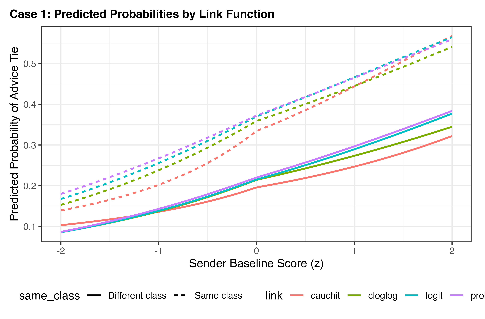
この図は、送信者のベースライン得点（横軸）を変化させたときの助言関係の予測確率（縦軸）を、 4つのリンク関数ごとに描いています。実線と破線は同クラス / 異クラスの比較です。
読み方のポイント:
- 4本の曲線が中央付近でほぼ重なっている場合、リンク関数の選択は実質的に結果に影響しません。
- 差が生じるのは主に裾（極端な得点域）です。cloglog は上裾の立ち上がりが速く、cauchit は裾が重い（ゆっくり 0/1 に近づく）傾向があります。
- 曲線が大きく重なっていれば、logit を採用して OR で報告するのが最も通りがよい選択です。
12.4 モデル比較と OR
GLM と GAM のどちらを最終モデルにするかを判断します。 判断基準は「GAM にすることで、GLM では捉えられなかった非線形パターンが改善されるか？」です。
まず情報量規準（AIC / BIC）で数値比較し、 次に尤度比検定（LRT）で入れ子モデルを統計的に比較し、 最後に compare_performance() で多指標を一括確認します。
コード
make_ic_table(
"Binomial GLM" = m_bin_glm,
"Binomial GAM" = m_bin_gam
) |>
gt() |>
tab_header(title = "Case 1: Model Comparison (Binary)")| Case 1: Model Comparison (Binary) | |||
| model | AIC | BIC | deviance |
|---|---|---|---|
| Binomial GAM | 705.8045 | 743.9576 | 689.8023 |
| Binomial GLM | 709.1721 | 756.8571 | 689.1721 |
AIC / BIC / deviance を比較します。GAM の AIC が GLM より 4 以上小さければ非線形の追加利得がある可能性があります。 差が小さければ、より解釈しやすい GLM を採用するのが実務上の安全策です。
次に、GLM 同士の入れ子比較（尤度比検定）を実演します。 ここでは score_gap を除いた reduced モデルと full モデルを比較し、 「この予測子を追加することで適合が統計的に改善するか」を検定します。
コード
# 尤度ベース比較（入れ子 GLM）
m_bin_glm_reduced <- update(m_bin_glm, . ~ . - score_gap)
tibble(
model = c("Reduced GLM", "Full GLM"),
logLik = c(as.numeric(logLik(m_bin_glm_reduced)), as.numeric(logLik(m_bin_glm))),
AIC = c(AIC(m_bin_glm_reduced), AIC(m_bin_glm)),
BIC = c(BIC(m_bin_glm_reduced), BIC(m_bin_glm))
) |>
gt() |>
tab_header(title = "Case 1: Likelihood-based Comparison (Nested GLM)")| Case 1: Likelihood-based Comparison (Nested GLM) | |||
| model | logLik | AIC | BIC |
|---|---|---|---|
| Reduced GLM | -344.9882 | 707.9763 | 750.8928 |
| Full GLM | -344.5861 | 709.1721 | 756.8571 |
コード
anova(m_bin_glm_reduced, m_bin_glm, test = "Chisq")Analysis of Deviance Table
Model 1: tie ~ same_class + prof_gap + score_from_sc + score_to_sc + prof_from +
prof_to
Model 2: tie ~ same_class + prof_gap + score_from_sc + score_to_sc + score_gap +
prof_from + prof_to
Resid. Df Resid. Dev Df Deviance Pr(>Chi)
1 861 689.98
2 860 689.17 1 0.80419 0.3698anova() の出力で Pr(>Chi) が有意（< .05）であれば、score_gap の追加が適合を有意に改善したと判断できます。 非有意であれば、score_gap を除いたシンプルなモデルで十分です。
compare_performance() は AIC / BIC に加え、Tjur’s R²（2値モデル専用の擬似決定係数）なども一括で比較でき、 単一指標への依存を避けたいときに便利です。
コード
performance::compare_performance(m_bin_glm, m_bin_gam) |>
gt() |>
tab_header(title = "Case 1: compare_performance()")| Case 1: compare_performance() | |||||||||||||||
| Name | Model | AIC | AIC_wt | AICc | AICc_wt | BIC | BIC_wt | RMSE | Sigma | Log_loss | Score_log | Score_spherical | PCP | R2_Tjur | R2 |
|---|---|---|---|---|---|---|---|---|---|---|---|---|---|---|---|
| m_bin_glm | glm | 709.1721 | 0.1565919 | 709.4282 | 0.1508156 | 756.8571 | 0.00157848 | 0.3509275 | 1 | 0.3960759 | -32.58793 | 0.008604339 | 0.7533484 | 0.1534382 | NA |
| m_bin_gam | gam | 705.8045 | 0.8434081 | 705.9718 | 0.8491844 | 743.9576 | 0.99842152 | 0.3510766 | 1 | 0.3964381 | -32.57754 | 0.008035493 | 0.7531689 | NA | 0.1470545 |
sjPlot::tab_model() は、論文に直接貼れる形式の回帰結果テーブルを HTML で生成します。 OR（オッズ比）、信頼区間、p 値が自動計算されるため、報告用テーブルの作成に便利です。
コード
sjPlot::tab_model(
m_bin_glm,
show.aic = TRUE,
show.ci = TRUE,
show.se = TRUE,
dv.labels = "Case 1 Binomial GLM"
)| Case 1 Binomial GLM | ||||
|---|---|---|---|---|
| Predictors | Odds Ratios | std. Error | CI | p |
| (Intercept) | 0.07 | 0.03 | 0.00 – Inf | <0.001 |
| same class | 4.26 | 0.85 | 0.00 – Inf | <0.001 |
| prof gap | 1.18 | 0.24 | 0.00 – Inf | 0.398 |
| score from sc | 1.10 | 0.13 | 0.00 – Inf | 0.430 |
| score to sc | 1.01 | 0.13 | 0.00 – Inf | 0.939 |
| score gap | 0.87 | 0.13 | 0.00 – Inf | 0.372 |
| prof from [B1] | 0.51 | 0.13 | 0.00 – Inf | 0.007 |
| prof from [B2] | 0.27 | 0.08 | 0.00 – Inf | <0.001 |
| prof to [B1] | 2.98 | 0.83 | 0.00 – Inf | <0.001 |
| prof to [B2] | 6.49 | 2.11 | 0.00 – Inf | <0.001 |
| Observations | 870 | |||
| R2 Tjur | 0.153 | |||
| AIC | 709.172 | |||
ロジスティック回帰の係数をそのまま読んでも直感的ではありません（ロジットスケールのため）。 そこで、係数を指数変換してオッズ比（OR: Odds Ratio）に変換します。
- OR = 1: 効果なし
- OR > 1: その予測子が増えると、アウトカム（助言関係）のオッズが増加
- OR < 1: オッズが減少
broom::tidy(..., exponentiate = TRUE) がこの変換を自動で行います。
コード
broom::tidy(m_bin_glm, conf.int = TRUE, exponentiate = TRUE) |>
gt() |>
tab_header(title = "Case 1: Odds Ratios (Binomial GLM)") |>
cols_label(
term = "Term",
estimate = "OR",
conf.low = "2.5%",
conf.high = "97.5%",
p.value = "p"
)| Case 1: Odds Ratios (Binomial GLM) | ||||||
| Term | OR | std.error | statistic | p | 2.5% | 97.5% |
|---|---|---|---|---|---|---|
| (Intercept) | 0.07188557 | 0.3848851 | -6.84017039 | 7.909904e-12 | 0.03261557 | 0.1483436 |
| same_class | 4.26405661 | 0.1993919 | 7.27321949 | 3.510193e-13 | 2.89519605 | 6.3339814 |
| prof_gap | 1.18283660 | 0.1986764 | 0.84517043 | 3.980157e-01 | 0.80488674 | 1.7619109 |
| score_from_sc | 1.10088756 | 0.1218774 | 0.78863475 | 4.303255e-01 | 0.86679295 | 1.3986803 |
| score_to_sc | 1.00977151 | 0.1267402 | 0.07672451 | 9.388427e-01 | 0.78700137 | 1.2945668 |
| score_gap | 0.87455296 | 0.1501376 | -0.89279711 | 3.719658e-01 | 0.64926306 | 1.1707591 |
| prof_fromB1 | 0.51309937 | 0.2478435 | -2.69236775 | 7.094667e-03 | 0.31573838 | 0.8371689 |
| prof_fromB2 | 0.26534091 | 0.3114202 | -4.26028890 | 2.041628e-05 | 0.14030219 | 0.4783883 |
| prof_toB1 | 2.97898659 | 0.2797831 | 3.90153416 | 9.558497e-05 | 1.75259788 | 5.2723293 |
| prof_toB2 | 6.48969701 | 0.3244016 | 5.76512505 | 8.159732e-09 | 3.50088997 | 12.5639665 |
12.4.1 OR テーブルの読み方（worked interpretation）
各予測子の OR を以下のように解釈します。
- same_class: OR が 1 より大きければ、同クラスのペアは異クラスに比べてその倍数だけ助言関係のオッズが高い。たとえば OR = 2.5 なら「同クラスは異クラスの 2.5 倍のオッズで助言関係をもつ」ことを意味します。
- prof_gap: OR が 1 より大きければ、習熟度差が 1 段階大きくなるごとにオッズがその倍率で増加します。
- score_from_sc: 送信者のベースライン得点が 1SD 高くなるごとのオッズの変化を示します。
- score_to_sc: 受信者のベースライン得点が 1SD 高くなるごとのオッズの変化です。
- score_gap: 送信者と受信者の得点差が 1SD 大きくなるごとのオッズの変化です。
- prof_from / prof_to: カテゴリカル変数のため、参照水準（A2）と比較した各水準の OR です。
論文報告で OR を使うときの4点セット
OR を報告する際は、以下の4つを必ずセットで提示してください。
- 効果の方向（正 or 負）
- OR と 95% 信頼区間（CI が 1 をまたがなければ有意）
- p 値
- 応答スケールでの予測確率（下のセクションで算出）
OR だけでは「実際にどれくらい確率が変わるか」が伝わりにくいため、 予測確率の差を併記することで読者の理解が格段に向上します。
12.5 応答スケール予測（予測確率）
OR はオッズの比であり、確率そのものではありません。 同じ OR = 2 でも、ベースラインの確率が 5% のときと 50% のときでは、確率の変化幅が大きく異なります。 そのため、応答スケール（確率スケール）での予測を可視化し、 モデルの実質的な含意を直感的に伝えることが重要です。
ここでは、送信者のベースライン得点（score_from_sc）を −2 から +2 まで動かし、 同クラス / 異クラスの条件ごとに予測確率を算出します。 GLM と GAM の予測を重ねることで、「非線形を許すとどれだけ予測が変わるか」も確認できます。
コード
new_bin <- tidyr::expand_grid(
same_class = c(0L, 1L),
prof_gap = 1,
score_from_sc = seq(-2, 2, length.out = 120),
score_to_sc = 0,
prof_from = factor("B1", levels = levels(dat_bin$prof_from)),
prof_to = factor("B1", levels = levels(dat_bin$prof_to))
) |>
mutate(score_gap = abs(score_from_sc - score_to_sc))
new_bin$prob_glm <- predict(m_bin_glm, newdata = new_bin, type = "response")
new_bin$prob_gam <- predict(m_bin_gam, newdata = new_bin, type = "response")
plot_bin <- new_bin |>
pivot_longer(
cols = c(prob_glm, prob_gam),
names_to = "model",
values_to = "prob"
) |>
mutate(
model = dplyr::recode(model, prob_glm = "GLM", prob_gam = "GAM"),
same_class = factor(same_class, levels = c(0, 1), labels = c("Different class", "Same class"))
)
ggplot(plot_bin, aes(x = score_from_sc, y = prob, color = model, linetype = same_class)) +
geom_line(linewidth = 1) +
labs(
x = "Sender Baseline Score (z)",
y = "Predicted Probability of Advice Tie",
title = "Case 1: Response-Scale Prediction"
)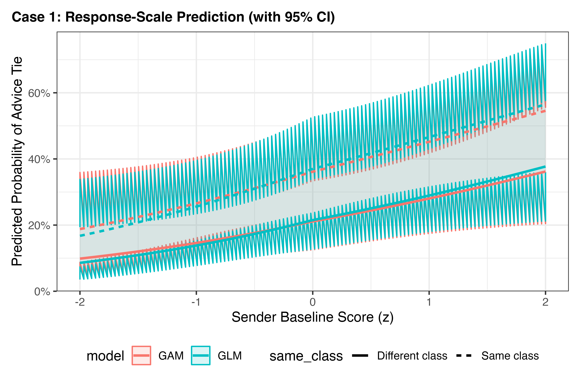
図の読み方:
- y 軸: 助言関係の予測確率（0〜1）。読者にとって最も直感的なスケールです。
- GLM と GAM の曲線がほぼ一致: ロジットスケールでの線形仮定が妥当であり、より単純な GLM で十分。
- GAM 曲線に明確な屈曲がある: 非線形関係があり、GAM がより適切。
- 同クラスと異クラスの曲線の間隔:
same_class効果の実質的な大きさを確率スケールで示します。間隔が大きいほど、クラスの同一性が助言関係に大きく影響しています。
sjPlot::plot_model() は、特定の予測子の効果を可視化する簡便な関数です。 type = "pred" で応答スケールの予測を出力し、terms で表示する予測子を選択します。
コード
sjPlot::plot_model(
m_bin_glm,
type = "pred",
terms = c("score_from_sc", "prof_from"),
show.data = FALSE
)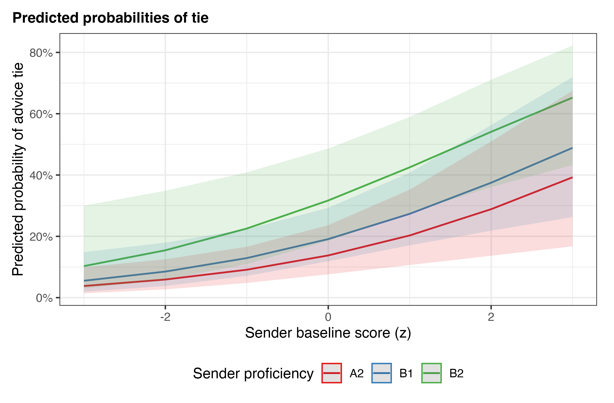
12.6 下位検定（Case 1: 送信者/受信者習熟度）
GLM の係数テーブルは「習熟度が有意か」を教えてくれますが、 「具体的にどの習熟度レベル間で差があるのか」は教えてくれません（3水準以上のカテゴリ変数の場合）。
emmeans（estimated marginal means）を使うと、各水準における予測確率を算出し、 さらにペアごとの差を検定できます。 type = "response" を指定することで、ロジットスケールではなく確率スケールで結果が得られます。 Holm 法による多重比較補正を適用しています。
コード
emm_from <- emmeans(m_bin_glm, ~ prof_from, type = "response")
emm_to <- emmeans(m_bin_glm, ~ prof_to, type = "response")
as.data.frame(emm_from) |>
gt() |>
tab_header(title = "Case 1: EMMs for Sender Proficiency (response scale)")| Case 1: EMMs for Sender Proficiency (response scale) | |||||
| prof_from | prob | SE | df | asymp.LCL | asymp.UCL |
|---|---|---|---|---|---|
| A2 | 0.28284395 | 0.03640521 | Inf | 0.21718245 | 0.3592469 |
| B1 | 0.16830557 | 0.02227503 | Inf | 0.12902852 | 0.2165659 |
| B2 | 0.09473554 | 0.02389813 | Inf | 0.05714596 | 0.1530375 |
コード
pairs(emm_from, adjust = "holm") |>
as.data.frame() |>
gt() |>
tab_header(title = "Case 1: Pairwise (Sender Proficiency, Holm)")| Case 1: Pairwise (Sender Proficiency, Holm) | ||||||
| contrast | odds.ratio | SE | df | null | z.ratio | p.value |
|---|---|---|---|---|---|---|
| A2 / B1 | 1.948940 | 0.4830321 | Inf | 1 | 2.692368 | 1.418933e-02 |
| A2 / B2 | 3.768737 | 1.1736606 | Inf | 1 | 4.260289 | 6.124885e-05 |
| B1 / B2 | 1.933736 | 0.6188614 | Inf | 1 | 2.060575 | 3.934360e-02 |
コード
as.data.frame(emm_to) |>
gt() |>
tab_header(title = "Case 1: EMMs for Receiver Proficiency (response scale)")| Case 1: EMMs for Receiver Proficiency (response scale) | |||||
| prof_to | prob | SE | df | asymp.LCL | asymp.UCL |
|---|---|---|---|---|---|
| A2 | 0.07028369 | 0.01640429 | Inf | 0.04417652 | 0.1100432 |
| B1 | 0.18380821 | 0.02238346 | Inf | 0.14391042 | 0.2317726 |
| B2 | 0.32912972 | 0.04867618 | Inf | 0.24155032 | 0.4304418 |
コード
pairs(emm_to, adjust = "holm") |>
as.data.frame() |>
gt() |>
tab_header(title = "Case 1: Pairwise (Receiver Proficiency, Holm)")| Case 1: Pairwise (Receiver Proficiency, Holm) | ||||||
| contrast | odds.ratio | SE | df | null | z.ratio | p.value |
|---|---|---|---|---|---|---|
| A2 / B1 | 0.3356846 | 0.09391887 | Inf | 1 | -3.901534 | 1.911699e-04 |
| A2 / B2 | 0.1540904 | 0.04998717 | Inf | 1 | -5.765125 | 2.447920e-08 |
| B1 / B2 | 0.4590332 | 0.12436972 | Inf | 1 | -2.873837 | 4.055185e-03 |
12.6.1 EMMs テーブルの読み方
- EMMs テーブル: 各習熟度水準（A2, B1, B2）の予測確率を示します。他の予測子は平均値に固定されています。「B2 の送信者は平均的に X% の確率で助言関係をもつ」のように読みます。
- Pairwise テーブル: 各ペア（A2-B1, A2-B2, B1-B2）の対数オッズ差と p 値を示します。
p.valueが Holm 補正後に .05 未満であれば、そのペア間に有意な差があります。 - 報告では、EMMs の確率値をペア間の差と合わせて提示すると、読者に伝わりやすくなります（例：「B2 送信者の予測確率は X% であり、A2 送信者の Y% と比べて有意に高かった, p = .ZZZ」）。
12.7 診断
モデルを報告する前に、主要な仮定が破綻していないかを確認します。 以下のタブで、それぞれ異なる側面を点検します。
gam.check() は GAM 固有の診断で、4つのプロットと基底次元の妥当性検定を出力します。
コード
gam.check(m_bin_gam)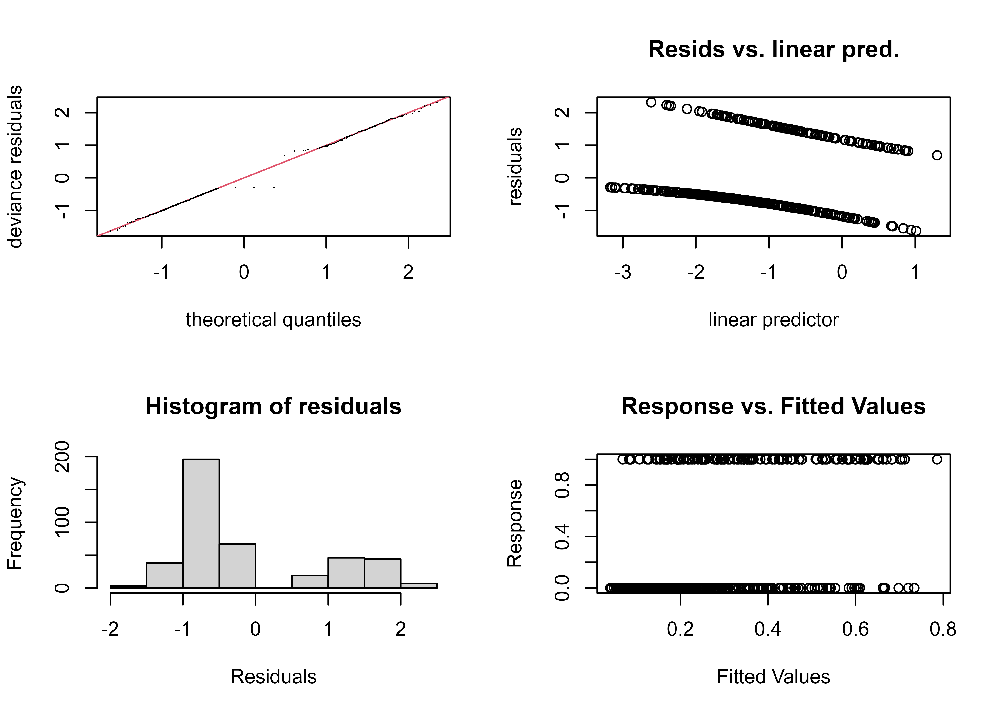
Method: REML Optimizer: outer newton
full convergence after 8 iterations.
Gradient range [-9.772627e-05,-2.823319e-06]
(score 350.7132 & scale 1).
Hessian positive definite, eigenvalue range [2.823304e-06,9.77252e-05].
Model rank = 22 / 22
Basis dimension (k) checking results. Low p-value (k-index<1) may
indicate that k is too low, especially if edf is close to k'.
k' edf k-index p-value
s(score_from_sc) 7.000000 0.000418 1.02 0.92
s(score_to_sc) 7.000000 0.000125 0.97 0.45出力の読み方:
- 左上（QQ プロット）: 残差が対角線に沿っていれば分布仮定は妥当。裾で大きくずれていれば分布の不適合を示唆。
- 右上（残差 vs 線形予測子）: 系統的なパターンがなければ OK。漏斗状の広がりがあれば不等分散を示唆。
- k-index テーブル: k-index が 1 に近ければ現在の基底次元（
k）で十分。0.8 未満かつ p 値が有意ならkを増やすべき。
k の判断ルール
gam.check() で k-index < 0.8 かつ p < .05 の場合、GAM を k を倍にして再当てはめしてください（例：k = 8 → k = 16）。 k-index ≈ 1.0 であれば現在の設定で問題ありません。
concurvity() は、平滑項同士が冗長でないか（多重共線性の平滑版）を確認します。
コード
concurvity(m_bin_gam, full = FALSE)$worst
para s(score_from_sc) s(score_to_sc)
para 1.000000e+00 3.965317e-25 1.639176e-25
s(score_from_sc) 3.959434e-25 1.000000e+00 1.189061e-03
s(score_to_sc) 1.643401e-25 1.189061e-03 1.000000e+00
$observed
para s(score_from_sc) s(score_to_sc)
para 1.000000e+00 2.524151e-29 4.738787e-28
s(score_from_sc) 3.959434e-25 1.000000e+00 1.189061e-03
s(score_to_sc) 1.643401e-25 1.189061e-03 1.000000e+00
$estimate
para s(score_from_sc) s(score_to_sc)
para 1.000000e+00 1.183381e-27 9.388567e-28
s(score_from_sc) 3.959434e-25 1.000000e+00 1.189061e-03
s(score_to_sc) 1.643401e-25 1.189061e-03 1.000000e+00判断基準:
- 値が 0 に近い: 冗長性なし（問題なし）
- 0.3〜0.8: 中程度の冗長性（注意が必要だが致命的ではない）
- 0.8 以上: 強い冗長性。平滑項の統合または一方の削除を検討
GLM 側の診断として、過分散と共線性を確認します。
コード
performance::check_overdispersion(m_bin_glm)# Overdispersion test
dispersion ratio = 0.999
p-value = 0.92コード
performance::check_collinearity(m_bin_glm)# Check for Multicollinearity
Low Correlation
Term VIF VIF 95% CI adj. VIF Tolerance Tolerance 95% CI
same_class 1.07 [1.02, 1.20] 1.03 0.94 [0.83, 0.98]
prof_gap 1.81 [1.66, 2.00] 1.35 0.55 [0.50, 0.60]
score_from_sc 1.06 [1.02, 1.20] 1.03 0.94 [0.83, 0.98]
score_to_sc 1.09 [1.04, 1.21] 1.04 0.92 [0.83, 0.96]
score_gap 1.01 [1.00, 3.46] 1.01 0.99 [0.29, 1.00]
prof_from 1.48 [1.37, 1.63] 1.10 0.68 [0.61, 0.73]
prof_to 1.59 [1.46, 1.75] 1.12 0.63 [0.57, 0.68]過分散の読み方:
- dispersion ratio が 1 に近ければ問題なし。2値データ（各行が 0/1）でグループ化していない場合、過分散は通常問題になりません。
- count データ（ケース2）ではこのチェックが特に重要です。
共線性（VIF）の読み方:
- VIF < 3: 問題なし
- VIF 3〜5: 中程度の共線性。推定は可能だが注意
- VIF > 5: 高い共線性。予測子の削除・統合を検討
- カテゴリカル変数の VIF は構造的にやや高くなりやすい点に留意
check_model() はモデル仮定の視覚的な一括チェックを提供します。
コード
performance::check_model(m_bin_glm)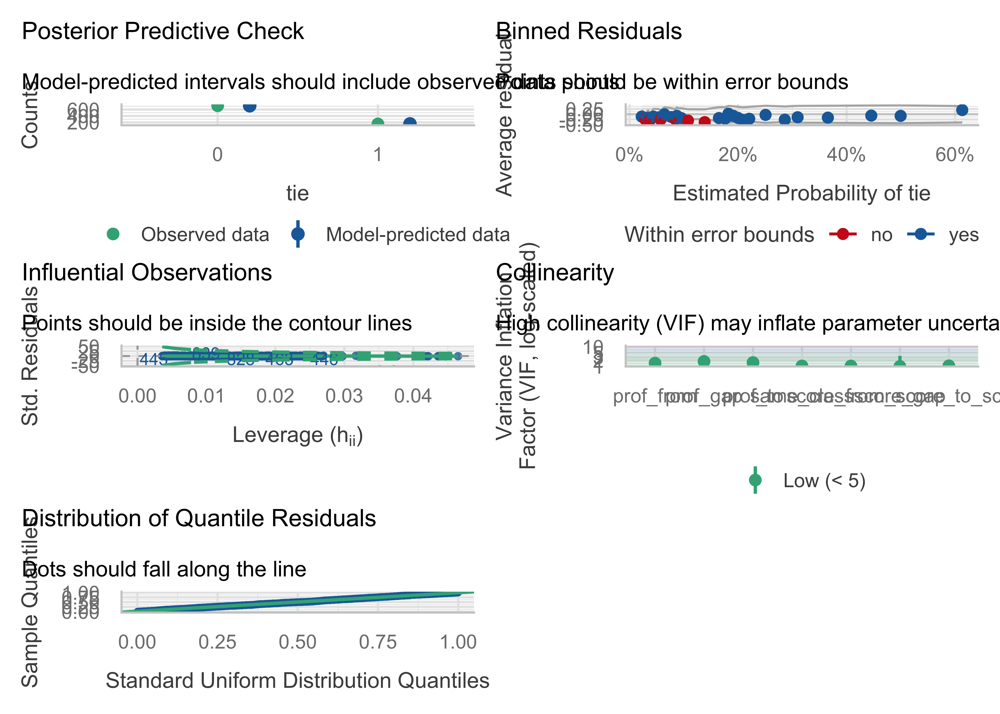
コード
performance::check_model(m_bin_gam)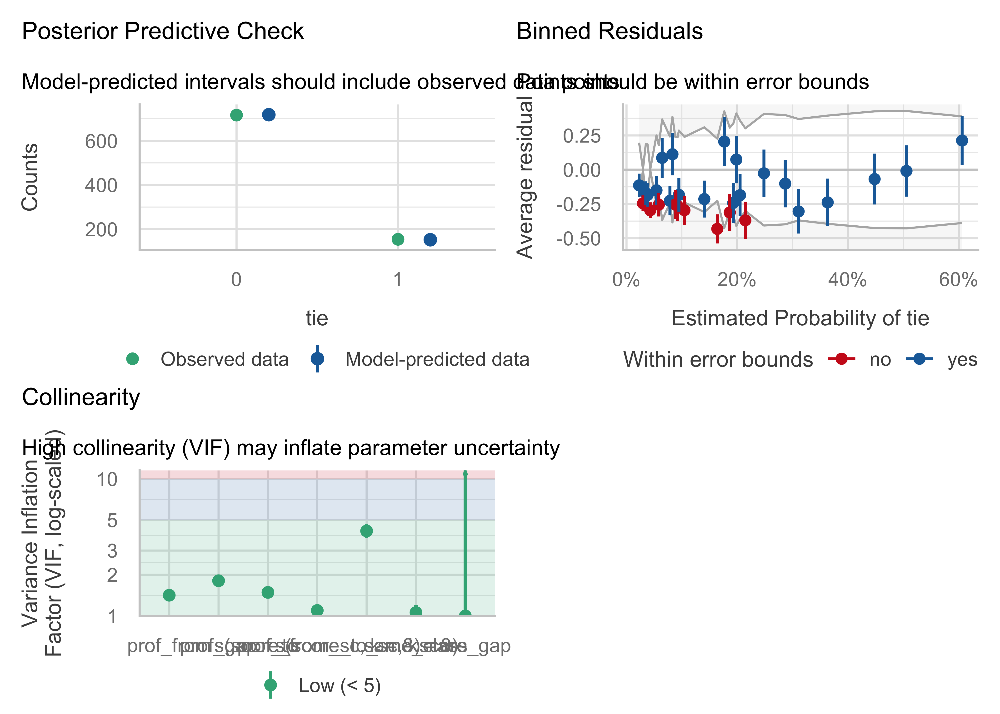
出力の読み方:
- Posterior predictive check: モデルから生成したデータが実データに似ていれば、モデルの仮定は妥当。
- Binned residuals: 2値データでは通常の残差プロットが使えないため、残差をビンに分けて平均残差を確認します。ほとんどのビンがゼロ近辺にあれば OK。
- Influential observations: クック距離が大きい観測値がないかを確認します。
実務メモ
- GAM の平滑項が縮退（edf がほぼ 0 または 1）した場合、 「非線形の追加利得は小さい」と判断できる。
- 最終報告は OR と予測確率図を併記すると読み手に伝わりやすい。
- 診断で深刻な問題がなければ、論文には「主要な仮定違反は認められなかった」と1文で記述し、必要に応じて図を supplementary materials に掲載します。
13 ケース2: 協働回数（Count: Poisson/NB/GAM）
目的: 学習者ペアの協働回数（0を含む）を、 同クラスかどうか、習熟度差、ベースライン平均で説明します。
13.1 モデル用データの作成（実データ）
協働ネットワーク（60名）の全無向ペアを作成します。 アウトカム weight は、各ペアの協働回数（0を含む整数値）です。 0 のペアが多いのはネットワークデータの典型的な特徴です。
予測子は以下のとおりです。
same_class: 同クラスなら 1prof_gap: 習熟度の絶対差baseline_mean_sc: ペア両者のベースライン得点の平均（標準化済み）
コード
# 全ペア（無向）を作成
all_pairs <- tidyr::crossing(id1 = nodes_collab$id, id2 = nodes_collab$id) |>
mutate(
n1 = as.integer(gsub("S", "", id1)),
n2 = as.integer(gsub("S", "", id2))
) |>
filter(n1 < n2) |>
dplyr::select(-n1, -n2)
# 観測されたエッジ重みを無向ペアへ統合
w_obs <- edges_collab |>
mutate(
a = pmin(from, to),
b = pmax(from, to)
) |>
group_by(a, b) |>
summarise(weight = sum(weight), .groups = "drop")
# 全ペアに観測重みを結合（非観測は0）
dat_count <- all_pairs |>
mutate(a = pmin(id1, id2), b = pmax(id1, id2)) |>
left_join(w_obs, by = c("a", "b")) |>
mutate(weight = tidyr::replace_na(weight, 0L)) |>
left_join(
nodes_collab |>
dplyr::select(id1 = id, class1 = class, profn1 = prof_num, base1_sc = baseline_score_sc),
by = "id1"
) |>
left_join(
nodes_collab |>
dplyr::select(id2 = id, class2 = class, profn2 = prof_num, base2_sc = baseline_score_sc),
by = "id2"
) |>
mutate(
same_class = as.integer(class1 == class2),
prof_gap = abs(profn1 - profn2),
baseline_mean_sc = (base1_sc + base2_sc) / 2
)
summary(dat_count$weight) Min. 1st Qu. Median Mean 3rd Qu. Max.
0.0000 0.0000 0.0000 0.2051 0.0000 8.0000 コード
sum(dat_count$weight > 0)[1] 117summary() で weight の分布を確認します。0 が多い分布は右裾が長くなる傾向があり、 正規分布ベースの OLS には不向きです。 sum(dat_count$weight > 0) は協働が実際に観測されたペア数を示します。
13.2 Poisson から開始し、過分散を確認
カウントデータの自然な出発点は Poisson GLM です。 Poisson 分布は「平均 = 分散」を仮定しますが、 実データではしばしば分散が平均を上回ります（過分散）。 まず Poisson を当て、直後に過分散を検定します。
コード
m_count_pois <- glm(
weight ~ same_class + prof_gap + baseline_mean_sc,
family = poisson(link = "log"),
data = dat_count
)
performance::check_overdispersion(m_count_pois)# Overdispersion test
dispersion ratio = 2.831
Pearson's Chi-Squared = 4999.686
p-value = < 0.001過分散テストの読み方:
- dispersion ratio: この値が 1 に近ければ Poisson の仮定は妥当。1 より大きく、かつ p 値が有意であれば過分散が存在します。
- 過分散がある場合、Poisson の標準誤差は過小評価されます。その結果、本来有意でない効果が有意と判定されるリスク（偽陽性の膨張）が生じます。
カウントデータでは過分散チェックを絶対に飛ばさない
Poisson 回帰で過分散を無視すると、標準誤差が実際より小さく推定され、Type I エラー率が膨張します。 過分散が検出された場合は、次のステップで負の二項（NB）モデルに切り替えます。
13.3 NB-GLM と NB-GAM
過分散が検出されたため、負の二項（Negative Binomial, NB）分布に切り替えます。 NB は Poisson に分散パラメータ（theta）を追加したモデルで、平均と分散を独立に扱えます。
MASS::glm.nb(): NB-GLM を当てはめます。内部で theta を推定します。mgcv::gam(..., family = nb()): NB-GAM。連続予測子の非線形を許容します。
コード
m_count_nb_glm <- MASS::glm.nb(
weight ~ same_class + prof_gap + baseline_mean_sc,
data = dat_count
)
m_count_nb_gam <- gam(
weight ~ same_class + prof_gap + s(baseline_mean_sc, k = 10),
family = nb(),
data = dat_count,
method = "REML",
select = TRUE
)
summary(m_count_nb_glm)
Call:
MASS::glm.nb(formula = weight ~ same_class + prof_gap + baseline_mean_sc,
data = dat_count, init.theta = 0.07115189126, link = log)
Coefficients:
Estimate Std. Error z value Pr(>|z|)
(Intercept) -2.7638 0.2041 -13.538 < 2e-16 ***
same_class 2.4448 0.2433 10.049 < 2e-16 ***
prof_gap -0.5670 0.2009 -2.822 0.00477 **
baseline_mean_sc -0.2785 0.1745 -1.596 0.11052
---
Signif. codes: 0 '***' 0.001 '**' 0.01 '*' 0.05 '.' 0.1 ' ' 1
(Dispersion parameter for Negative Binomial(0.0712) family taken to be 1)
Null deviance: 480.39 on 1769 degrees of freedom
Residual deviance: 353.77 on 1766 degrees of freedom
AIC: 1271.2
Number of Fisher Scoring iterations: 1
Theta: 0.0712
Std. Err.: 0.0101
2 x log-likelihood: -1261.2020 コード
summary(m_count_nb_gam)
Family: Negative Binomial(0.07)
Link function: log
Formula:
weight ~ same_class + prof_gap + s(baseline_mean_sc, k = 10)
Parametric coefficients:
Estimate Std. Error z value Pr(>|z|)
(Intercept) -2.7530 0.2047 -13.448 < 2e-16 ***
same_class 2.4284 0.2447 9.923 < 2e-16 ***
prof_gap -0.5689 0.2023 -2.812 0.00493 **
---
Signif. codes: 0 '***' 0.001 '**' 0.01 '*' 0.05 '.' 0.1 ' ' 1
Approximate significance of smooth terms:
edf Ref.df Chi.sq p-value
s(baseline_mean_sc) 0.7899 9 2.016 0.0877 .
---
Signif. codes: 0 '***' 0.001 '**' 0.01 '*' 0.05 '.' 0.1 ' ' 1
R-sq.(adj) = 0.0807 Deviance explained = 26.3%
-REML = 633.98 Scale est. = 1 n = 177013.3.1 NB-GLM 出力の読み方
NB-GLM の summary() 出力は Poisson GLM と構造が似ていますが、以下の点が異なります。
- 係数は log スケール: Poisson と同様に、係数を指数変換すると IRR（Incidence Rate Ratio） になります。
- Theta: 出力の末尾に表示される分散パラメータです。theta が小さいほど過分散が強いことを意味します。theta が十分大きい場合（例：数百以上）、NB は Poisson とほぼ同じ結果を返します。
- AIC: Poisson と NB の AIC を比較することで、NB への切り替えが正当化されるかを確認できます（NB の AIC が小さければ、過分散を考慮する利得がある）。
13.3.2 NB-GAM 出力の読み方
GAM 固有の出力（edf, k-index）の読み方はケース1と同じです。 edf ≈ 1 であれば、baseline_mean_sc の非線形効果は小さく、NB-GLM で十分です。
13.4 モデル比較と IRR
Poisson, NB-GLM, NB-GAM の3モデルを情報量規準で比較します。 通常、過分散がある場合は Poisson の AIC が最も大きく（最も悪い適合）なります。
コード
make_ic_table(
"Poisson GLM" = m_count_pois,
"NB GLM" = m_count_nb_glm,
"NB GAM" = m_count_nb_gam
) |>
gt() |>
tab_header(title = "Case 2: Model Comparison (Count)")| Case 2: Model Comparison (Count) | |||
| model | AIC | BIC | deviance |
|---|---|---|---|
| NB GLM | 1271.202 | 1298.595 | 353.7701 |
| NB GAM | 1271.530 | 1299.852 | 349.2019 |
| Poisson GLM | 1943.195 | 1965.109 | 1595.2593 |
コード
performance::compare_performance(m_count_pois, m_count_nb_glm, m_count_nb_gam) |>
gt() |>
tab_header(title = "Case 2: compare_performance()")| Case 2: compare_performance() | |||||||||||||
| Name | Model | AIC | AIC_wt | AICc | AICc_wt | BIC | BIC_wt | RMSE | Sigma | Score_log | Score_spherical | R2_Nagelkerke | R2 |
|---|---|---|---|---|---|---|---|---|---|---|---|---|---|
| m_count_pois | glm | 1943.195 | 6.483151e-147 | 1943.217 | 6.523264e-147 | 1965.109 | 1.209481e-145 | 0.8295349 | 1 | -0.5466651 | 0.02259332 | 0.3361805 | NA |
| m_count_nb_glm | negbin | 1271.202 | 5.409469e-01 | 1271.236 | 5.412136e-01 | 1298.595 | 6.520417e-01 | 0.8301695 | 1 | -0.4963721 | 0.02264170 | 0.2904492 | NA |
| m_count_nb_gam | gam | 1271.530 | 4.590531e-01 | 1271.566 | 4.587864e-01 | 1299.852 | 3.479583e-01 | 0.8293766 | 1 | -0.4948898 | 0.02265500 | NA | 0.08074246 |
上の表で AIC が最も小さいモデルを確認します。 Poisson → NB への改善が大きければ、過分散の扱いが重要であったことが裏付けられます。 NB-GLM → NB-GAM の改善が小さければ、非線形の追加利得は限定的です。
sjPlot::tab_model() で Poisson と NB-GLM の回帰テーブルを並べ、 係数と標準誤差の違いを確認します。過分散を無視した Poisson の SE が NB より小さいことに注目してください。
コード
sjPlot::tab_model(
m_count_pois,
m_count_nb_glm,
show.aic = TRUE,
show.ci = TRUE,
show.se = TRUE,
dv.labels = c("Poisson GLM", "NB GLM")
)| Poisson GLM | NB GLM | |||||||
|---|---|---|---|---|---|---|---|---|
| Predictors | Incidence Rate Ratios | std. Error | CI | p | Incidence Rate Ratios | std. Error | CI | p |
| (Intercept) | 0.06 | 0.01 | 0.00 – Inf | <0.001 | 0.06 | 0.01 | 0.00 – Inf | <0.001 |
| same class | 11.19 | 1.61 | 0.00 – Inf | <0.001 | 11.53 | 2.80 | 0.00 – Inf | <0.001 |
| prof gap | 0.59 | 0.05 | 0.00 – Inf | <0.001 | 0.57 | 0.11 | 0.00 – Inf | 0.005 |
| baseline mean sc | 0.81 | 0.06 | 0.00 – Inf | 0.006 | 0.76 | 0.13 | 0.00 – Inf | 0.111 |
| Observations | 1770 | 1770 | ||||||
| R2 Nagelkerke | 0.336 | 0.290 | ||||||
| AIC | 1943.195 | 1271.202 | ||||||
カウントデータでは、係数を指数変換して IRR（Incidence Rate Ratio: 発生率比） として解釈します。
- IRR = 1: 効果なし
- IRR > 1: その予測子が増えると期待カウント（協働回数）が増加
- IRR < 1: 期待カウントが減少
コード
broom::tidy(m_count_nb_glm, conf.int = TRUE, exponentiate = TRUE) |>
gt() |>
tab_header(title = "Case 2: IRR (NB GLM)") |>
cols_label(
term = "Term",
estimate = "IRR",
conf.low = "2.5%",
conf.high = "97.5%",
p.value = "p"
)| Case 2: IRR (NB GLM) | ||||||
| Term | IRR | std.error | statistic | p | 2.5% | 97.5% |
|---|---|---|---|---|---|---|
| (Intercept) | 0.06304928 | 0.2041492 | -13.538324 | 9.288435e-42 | 0.04198601 | 0.09433732 |
| same_class | 11.52809793 | 0.2432953 | 10.048644 | 9.314048e-24 | 7.20503674 | 18.80072428 |
| prof_gap | 0.56719803 | 0.2009439 | -2.821915 | 4.773777e-03 | 0.37831172 | 0.84772299 |
| baseline_mean_sc | 0.75695333 | 0.1744849 | -1.595861 | 1.105198e-01 | 0.55202848 | 1.03835869 |
13.4.1 IRR テーブルの読み方（worked interpretation）
- same_class: IRR が 1 より大きければ、同クラスのペアは異クラスに比べてその倍率だけ期待協働回数が多い。たとえば IRR = 3.0 なら「同クラスペアの期待協働回数は異クラスの 3 倍」です。
- prof_gap: 習熟度差が 1 段階大きくなるごとに期待協働回数がその倍率で変化します。
- baseline_mean_sc: ペアのベースライン平均得点が 1SD 高くなるごとの変化率です。
IRR を論文で報告するときの書き方
「同クラスペアは異クラスに比べ、期待協働回数が有意に高かった, β = [値], SE = [値], z = [値], p = [値], IRR = [値], 95% CI [[下限], [上限]]。」
IRR の 95% CI が 1 をまたがなければ有意です。
13.5 応答スケール予測（期待協働回数）
IRR はカウントの比であり、「実際に何回の協働が期待されるか」は直接伝えません。 応答スケール（期待カウント）での予測を可視化し、 NB-GLM と NB-GAM の予測を比較します。
コード
new_count <- tidyr::expand_grid(
same_class = c(0L, 1L),
prof_gap = 1,
baseline_mean_sc = seq(-2, 2, length.out = 120)
)
new_count$mu_nb_glm <- predict(m_count_nb_glm, newdata = new_count, type = "response")
new_count$mu_nb_gam <- predict(m_count_nb_gam, newdata = new_count, type = "response")
plot_count <- new_count |>
pivot_longer(
cols = c(mu_nb_glm, mu_nb_gam),
names_to = "model",
values_to = "mu"
) |>
mutate(
model = dplyr::recode(model, mu_nb_glm = "NB-GLM", mu_nb_gam = "NB-GAM"),
same_class = factor(same_class, levels = c(0, 1), labels = c("Different class", "Same class"))
)
ggplot(plot_count, aes(x = baseline_mean_sc, y = mu, color = model, linetype = same_class)) +
geom_line(linewidth = 1) +
labs(
x = "Mean Baseline Score of Dyad (z)",
y = "Expected Collaboration Count",
title = "Case 2: Response-Scale Prediction"
)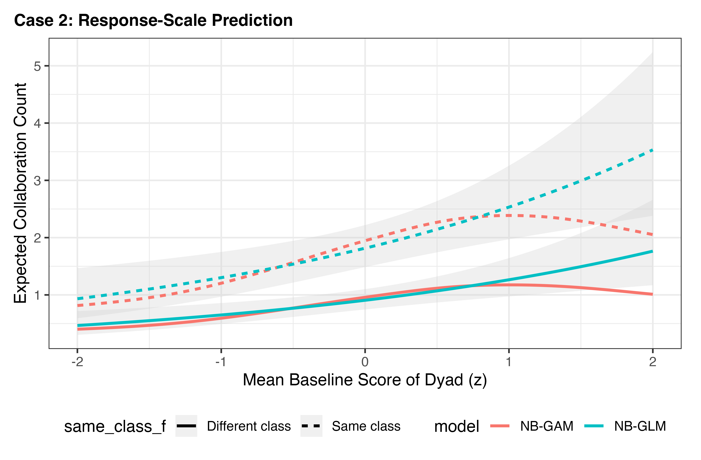
図の読み方:
- y 軸: 期待協働回数（0以上の連続値）。ベースライン平均得点が変化するにつれて、期待カウントがどう変わるかを示します。
- NB-GLM と NB-GAM の曲線が近い: log スケールでの線形仮定が妥当。GLM で十分。
- NB-GAM に屈曲がある: 非線形が存在し、GAM が有用。
- 同クラス vs 異クラスの間隔:
same_class効果の実質的な大きさを件数スケールで示します。
コード
sjPlot::plot_model(
m_count_nb_glm,
type = "pred",
terms = "baseline_mean_sc",
show.data = FALSE
)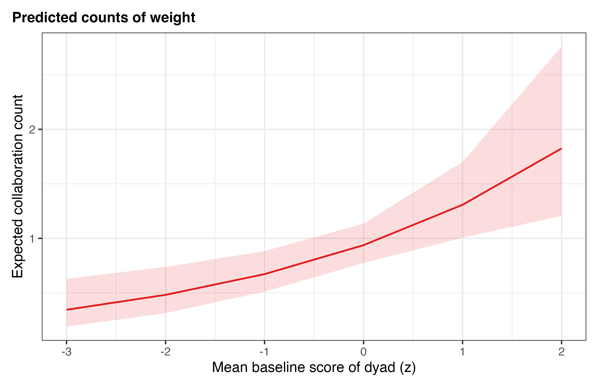
13.6 下位検定（Case 2: same_class）
same_class は 0/1 の二水準変数ですが、emmeans で応答スケール（期待カウント）を算出し、 差の検定を明示的に行うと報告が明確になります。
コード
emm_count_same <- emmeans(
m_count_nb_glm,
~ same_class,
at = list(same_class = c(0, 1)),
type = "response"
)
as.data.frame(emm_count_same) |>
gt() |>
tab_header(title = "Case 2: EMMs for same_class (response scale)")| Case 2: EMMs for same_class (response scale) | |||||
| same_class | response | SE | df | asymp.LCL | asymp.UCL |
|---|---|---|---|---|---|
| 0 | 0.04370308 | 0.007720058 | Inf | 0.03091357 | 0.06178386 |
| 1 | 0.50381343 | 0.084937712 | Inf | 0.36204788 | 0.70108953 |
コード
pairs(emm_count_same) |>
as.data.frame() |>
gt() |>
tab_header(title = "Case 2: Pairwise Contrast for same_class")| Case 2: Pairwise Contrast for same_class | ||||||
| contrast | ratio | SE | df | null | z.ratio | p.value |
|---|---|---|---|---|---|---|
| same_class0 / same_class1 | 0.08674458 | 0.02110454 | Inf | 1 | -10.04864 | 9.314048e-24 |
EMMs テーブルは、同クラス / 異クラスのそれぞれの期待協働回数を示します。 Pairwise テーブルの ratio は比率スケールでの比較（IRR に相当）です。 p 値が有意であれば、同クラスと異クラスの期待カウントに統計的な差があります。
13.7 診断
ケース1と同じ構造で、GAM 診断・共線性・過分散・総合診断を確認します。 カウントデータでは過分散のチェックが特に重要です。
コード
gam.check(m_count_nb_gam)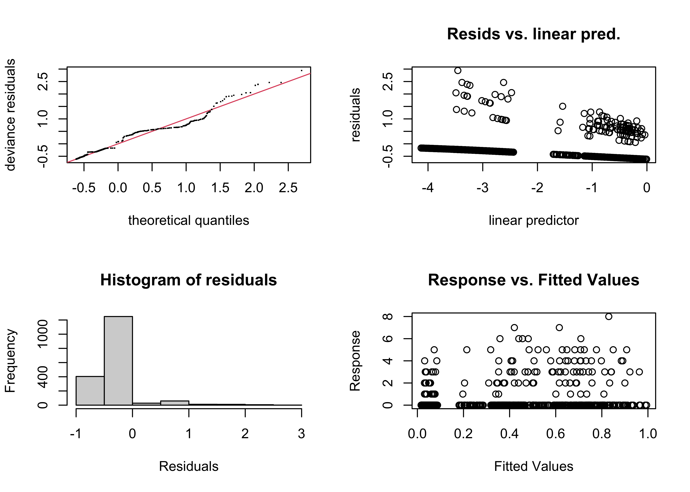
Method: REML Optimizer: outer newton
full convergence after 6 iterations.
Gradient range [-0.001721873,-0.0003516564]
(score 633.9823 & scale 1).
Hessian positive definite, eigenvalue range [0.009583575,48.87392].
Model rank = 12 / 12
Basis dimension (k) checking results. Low p-value (k-index<1) may
indicate that k is too low, especially if edf is close to k'.
k' edf k-index p-value
s(baseline_mean_sc) 9.00 0.79 0.66 0.58コード
concurvity(m_count_nb_gam, full = FALSE)$worst
para s(baseline_mean_sc)
para 1.000000e+00 6.177921e-23
s(baseline_mean_sc) 6.185237e-23 1.000000e+00
$observed
para s(baseline_mean_sc)
para 1.000000e+00 3.704673e-28
s(baseline_mean_sc) 6.185237e-23 1.000000e+00
$estimate
para s(baseline_mean_sc)
para 1.000000e+00 1.668254e-25
s(baseline_mean_sc) 6.185237e-23 1.000000e+00読み方はケース1と同じです。k-index と concurvity を確認してください。
Poisson と NB の両方で過分散チェックを実行し、NB に切り替えた効果を確認します。
コード
performance::check_overdispersion(m_count_pois)# Overdispersion test
dispersion ratio = 2.831
Pearson's Chi-Squared = 4999.686
p-value = < 0.001コード
performance::check_overdispersion(m_count_nb_glm)# Overdispersion test
dispersion ratio = 0.374
p-value = 0.048Poisson の dispersion ratio が大きく有意である一方、 NB の dispersion ratio が 1 に近ければ、NB への切り替えが過分散を適切に吸収したことを意味します。
コード
performance::check_collinearity(m_count_nb_glm)# Check for Multicollinearity
Low Correlation
Term VIF VIF 95% CI adj. VIF Tolerance Tolerance 95% CI
same_class 1.01 [1.00, 12.03] 1.00 0.99 [0.08, 1.00]
prof_gap 1.01 [1.00, 14.81] 1.00 0.99 [0.07, 1.00]
baseline_mean_sc 1.00 [1.00, 4.79e+06] 1.00 1.00 [0.00, 1.00]コード
performance::check_model(m_count_pois)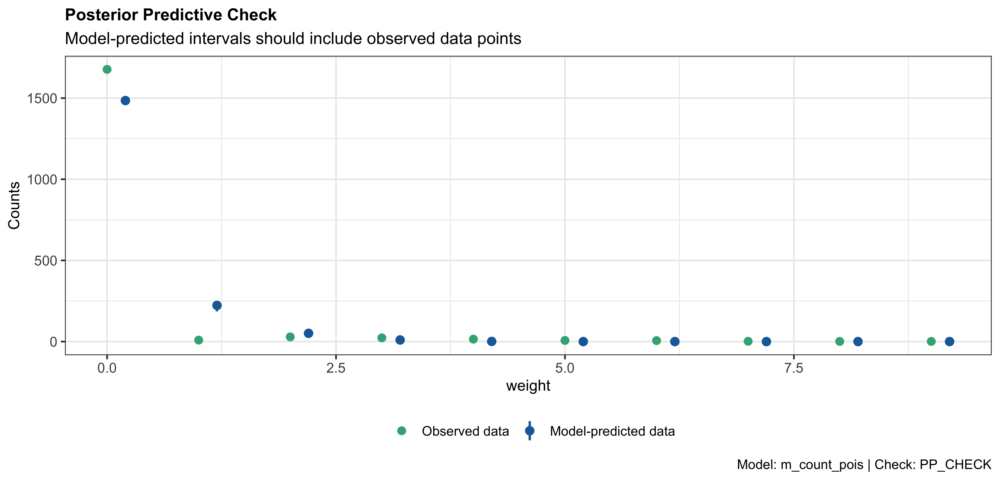
コード
performance::check_model(m_count_nb_glm)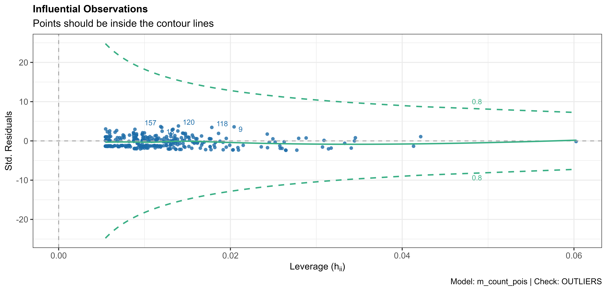
コード
performance::check_model(m_count_nb_gam)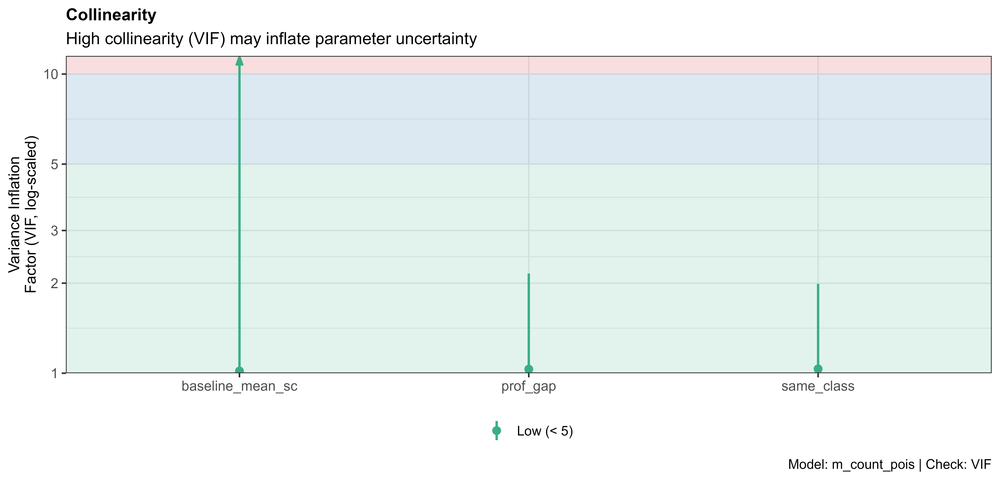
Poisson, NB-GLM, NB-GAM の check_model() を並べることで、 分布の選択による診断の改善を視覚的に確認できます。 特に Posterior predictive check で、NB モデルが Poisson より実データに近い生成データを作っていれば、 NB の選択は妥当です。
実務メモ
- 過分散がある場合、Poisson をそのまま使うと標準誤差が過小評価されやすい。
- NB を基準にし、非線形が必要なときだけ NB-GAM へ拡張する。
- 0 が極端に多い場合（ゼロ過剰）は
zeroinfl()やhurdle()も検討候補。
14 ケース3: 協働強度（Positive Continuous: Gamma GLM/GAM）
目的: 学習者ごとの協働強度（重み総和）を、 ベースライン得点・クラス・習熟度で説明します。
14.1 GLM/GAM の当てはめ
正の連続量（協働強度: 重み総和）には Gamma 分布 + log リンク が自然な選択です。
- Gamma 分布: 正の値のみをとり、右裾が長い分布に適合します。分散が平均に比例して大きくなるデータ（分散が一定でない場合）に向いています。
- log リンク: 予測値が常に正になることを保証し、係数を乗法的（何倍か）に解釈できます。
比較のために、通常の線形回帰（OLS: 正規分布仮定）も当てはめます。 OLS は「加法的効果」（何単位増えるか）、Gamma GLM は「乗法的効果」（何倍になるか）を推定する点が根本的に異なります。
コード
m_pos_lm <- lm(
collab_strength ~ baseline_score_sc + class + proficiency,
data = dat_pos
)
m_pos_gamma_glm <- glm(
collab_strength ~ baseline_score_sc + class + proficiency,
family = Gamma(link = "log"),
data = dat_pos
)
m_pos_gamma_gam <- gam(
collab_strength ~ s(baseline_score_sc, k = 8) + class + proficiency,
family = Gamma(link = "log"),
data = dat_pos,
method = "REML",
select = TRUE
)
summary(m_pos_lm)
Call:
lm(formula = collab_strength ~ baseline_score_sc + class + proficiency,
data = dat_pos)
Residuals:
Min 1Q Median 3Q Max
-12.1838 -4.3079 -0.6893 3.4918 12.5928
Coefficients:
Estimate Std. Error t value Pr(>|t|)
(Intercept) 10.4826 2.4815 4.224 9.27e-05 ***
baseline_score_sc -1.7139 0.8849 -1.937 0.05800 .
classB -4.9834 2.0894 -2.385 0.02061 *
classC -4.8280 2.0590 -2.345 0.02274 *
proficiencyB1 6.6495 2.3755 2.799 0.00709 **
proficiencyB2 3.8493 2.6666 1.444 0.15464
---
Signif. codes: 0 '***' 0.001 '**' 0.01 '*' 0.05 '.' 0.1 ' ' 1
Residual standard error: 6.305 on 54 degrees of freedom
Multiple R-squared: 0.276, Adjusted R-squared: 0.209
F-statistic: 4.118 on 5 and 54 DF, p-value: 0.003063コード
summary(m_pos_gamma_glm)
Call:
glm(formula = collab_strength ~ baseline_score_sc + class + proficiency,
family = Gamma(link = "log"), data = dat_pos)
Coefficients:
Estimate Std. Error t value Pr(>|t|)
(Intercept) 2.18804 0.19888 11.002 2.09e-15 ***
baseline_score_sc -0.15823 0.07092 -2.231 0.02985 *
classB -0.32191 0.16746 -1.922 0.05984 .
classC -0.39965 0.16502 -2.422 0.01883 *
proficiencyB1 0.64319 0.19039 3.378 0.00136 **
proficiencyB2 0.46044 0.21371 2.154 0.03568 *
---
Signif. codes: 0 '***' 0.001 '**' 0.01 '*' 0.05 '.' 0.1 ' ' 1
(Dispersion parameter for Gamma family taken to be 0.2553721)
Null deviance: 23.923 on 59 degrees of freedom
Residual deviance: 17.643 on 54 degrees of freedom
AIC: 389.02
Number of Fisher Scoring iterations: 7コード
summary(m_pos_gamma_gam)
Family: Gamma
Link function: log
Formula:
collab_strength ~ s(baseline_score_sc, k = 8) + class + proficiency
Parametric coefficients:
Estimate Std. Error t value Pr(>|t|)
(Intercept) 2.1951 0.2005 10.946 2.39e-15 ***
classB -0.3014 0.1676 -1.799 0.07762 .
classC -0.4061 0.1662 -2.443 0.01787 *
proficiencyB1 0.6274 0.1915 3.277 0.00183 **
proficiencyB2 0.4532 0.2154 2.104 0.04007 *
---
Signif. codes: 0 '***' 0.001 '**' 0.01 '*' 0.05 '.' 0.1 ' ' 1
Approximate significance of smooth terms:
edf Ref.df F p-value
s(baseline_score_sc) 0.7569 7 0.535 0.0304 *
---
Signif. codes: 0 '***' 0.001 '**' 0.01 '*' 0.05 '.' 0.1 ' ' 1
R-sq.(adj) = 0.223 Deviance explained = 25.9%
-REML = 193.86 Scale est. = 0.26007 n = 6014.1.1 OLS vs Gamma GLM の出力比較
OLS（m_pos_lm）と Gamma GLM（m_pos_gamma_glm）の係数が異なるのは当然です。
- OLS の係数: 「ベースライン得点が 1SD 上がると、協働強度が β 単位増える」（加法）
- Gamma GLM の係数（log スケール）: 「ベースライン得点が 1SD 上がると、協働強度が exp(β) 倍になる」（乗法）
どちらが適切かは、データの性質に依存します。 分散が平均に比例する（得点が高い人ほどばらつきも大きい）場合は Gamma が適しています。 モデル比較（AIC/BIC）と check_model() の診断で判断します。
Gamma GLM の注意点
Gamma 分布は厳密に正の値のみをモデル化できます。 collab_strength に 0 が含まれる場合、Gamma GLM はエラーを返すか、不安定な推定になります。 0 を含むデータでは、小さな定数（例: 0.001）を加えるか、Tweedie 分布を検討してください。
14.2 モデル比較と倍率解釈
OLS, Gamma GLM, Gamma GAM の3モデルを AIC/BIC で比較します。 正規分布（OLS）と Gamma 分布のどちらがデータに適しているかが判断のポイントです。
コード
make_ic_table(
"LM (Gaussian)" = m_pos_lm,
"Gamma GLM" = m_pos_gamma_glm,
"Gamma GAM" = m_pos_gamma_gam
) |>
gt() |>
tab_header(title = "Case 3: Model Comparison (Positive Continuous)")| Case 3: Model Comparison (Positive Continuous) | |||
| model | AIC | BIC | deviance |
|---|---|---|---|
| Gamma GLM | 389.0241 | 403.6845 | 17.64254 |
| Gamma GAM | 389.3713 | 403.9083 | 17.71685 |
| LM (Gaussian) | 398.9173 | 413.5777 | 2146.84704 |
コード
performance::compare_performance(m_pos_lm, m_pos_gamma_glm, m_pos_gamma_gam) |>
gt() |>
tab_header(title = "Case 3: compare_performance()")| Case 3: compare_performance() | ||||||||||||
| Name | Model | AIC | AIC_wt | AICc | AICc_wt | BIC | BIC_wt | RMSE | Sigma | R2 | R2_adjusted | R2_Nagelkerke |
|---|---|---|---|---|---|---|---|---|---|---|---|---|
| m_pos_lm | lm | 398.9173 | 0.00367036 | 401.0711 | 0.003638393 | 413.5777 | 0.003561503 | 5.981704 | 6.3052697 | 0.2760346 | 0.2090008 | NA |
| m_pos_gamma_glm | glm | 389.0241 | 0.51640589 | 391.1779 | 0.511908341 | 403.6845 | 0.501090199 | 5.934750 | 0.5053435 | NA | NA | 0.3022563 |
| m_pos_gamma_gam | gam | 389.1706 | 0.47992375 | 391.2882 | 0.484453266 | 403.7075 | 0.495348298 | 5.940542 | 0.5099684 | 0.2234117 | NA | NA |
コード
sjPlot::tab_model(
m_pos_lm,
m_pos_gamma_glm,
show.aic = TRUE,
show.ci = TRUE,
show.se = TRUE,
dv.labels = c("LM", "Gamma GLM")
)| LM | Gamma GLM | |||||||
|---|---|---|---|---|---|---|---|---|
| Predictors | Estimates | std. Error | CI | p | Estimates | std. Error | CI | p |
| (Intercept) | 10.48 | 2.48 | -Inf – Inf | <0.001 | 8.92 | 1.77 | 0.00 – Inf | <0.001 |
| baseline score sc | -1.71 | 0.88 | -Inf – Inf | 0.058 | 0.85 | 0.06 | 0.00 – Inf | 0.026 |
| class [B] | -4.98 | 2.09 | -Inf – Inf | 0.021 | 0.72 | 0.12 | 0.00 – Inf | 0.055 |
| class [C] | -4.83 | 2.06 | -Inf – Inf | 0.023 | 0.67 | 0.11 | 0.00 – Inf | 0.015 |
| proficiency [B1] | 6.65 | 2.38 | -Inf – Inf | 0.007 | 1.90 | 0.36 | 0.00 – Inf | 0.001 |
| proficiency [B2] | 3.85 | 2.67 | -Inf – Inf | 0.155 | 1.58 | 0.34 | 0.00 – Inf | 0.031 |
| Observations | 60 | 60 | ||||||
| R2 / R2 adjusted | 0.276 / 0.209 | 0.302 | ||||||
| AIC | 398.917 | 389.024 | ||||||
Gamma GLM の係数を指数変換して倍率（Multiplier）として解釈します。
- Multiplier = 1: 効果なし
- Multiplier > 1: その予測子が増えると期待協働強度がその倍率で増加
- Multiplier < 1: 期待協働強度が減少（例: 0.8 なら 20% 減少）
コード
broom::tidy(m_pos_gamma_glm, conf.int = TRUE, exponentiate = TRUE) |>
gt() |>
tab_header(title = "Case 3: Multiplicative Effects (Gamma GLM)") |>
cols_label(
term = "Term",
estimate = "Multiplier",
conf.low = "2.5%",
conf.high = "97.5%",
p.value = "p"
)| Case 3: Multiplicative Effects (Gamma GLM) | ||||||
| Term | Multiplier | std.error | statistic | p | 2.5% | 97.5% |
|---|---|---|---|---|---|---|
| (Intercept) | 8.9176952 | 0.19887918 | 11.001843 | 2.090874e-15 | 6.0869290 | 13.4224450 |
| baseline_score_sc | 0.8536559 | 0.07092025 | -2.231056 | 2.985135e-02 | 0.7445135 | 0.9796737 |
| classB | 0.7247600 | 0.16745579 | -1.922386 | 5.983901e-02 | 0.5245116 | 1.0013138 |
| classC | 0.6705553 | 0.16502324 | -2.421775 | 1.883301e-02 | 0.4848914 | 0.9277862 |
| proficiencyB1 | 1.9025361 | 0.19039103 | 3.378246 | 1.359798e-03 | 1.2984546 | 2.7262881 |
| proficiencyB2 | 1.5847676 | 0.21371488 | 2.154449 | 3.568390e-02 | 1.0397500 | 2.3933623 |
14.2.1 倍率テーブルの読み方（worked interpretation）
- baseline_score_sc: ベースライン得点が 1SD 高くなるごとに協働強度がその倍率で変化します。たとえば Multiplier = 1.25 なら「1SD の得点上昇で協働強度は 25% 増加する」と解釈します。
- class: 参照カテゴリ（例: class A）と比較した各クラスの倍率です。Multiplier = 0.7 なら「そのクラスは class A の 70%（30% 低い）」。
- proficiency: 参照水準と比較した各習熟度レベルの倍率です。
倍率を論文で報告するときの書き方
「Gamma GLM（log リンク）において、ベースライン得点の 1SD 増加は協働強度の有意な増加と関連していた, β = [値], SE = [値], z = [値], p = [値], exp(β) = [値], 95% CI [[下限], [上限]]。これは [値]% の増加に相当する。」
14.3 応答スケール予測（期待協働強度）
倍率は相対的な指標であり、「実際にどの程度の協働強度が期待されるか」は直接読めません。 応答スケール（期待値）で予測を可視化し、クラス間・モデル間の違いを確認します。
コード
new_pos <- tidyr::expand_grid(
class = factor(c("A", "B", "C"), levels = levels(dat_pos$class)),
proficiency = factor("B1", levels = levels(dat_pos$proficiency)),
baseline_score_sc = seq(min(dat_pos$baseline_score_sc), max(dat_pos$baseline_score_sc), length.out = 120)
)
new_pos$mu_gamma_glm <- predict(m_pos_gamma_glm, newdata = new_pos, type = "response")
new_pos$mu_gamma_gam <- predict(m_pos_gamma_gam, newdata = new_pos, type = "response")
plot_pos <- new_pos |>
pivot_longer(
cols = c(mu_gamma_glm, mu_gamma_gam),
names_to = "model",
values_to = "mu"
) |>
mutate(model = dplyr::recode(model, mu_gamma_glm = "Gamma-GLM", mu_gamma_gam = "Gamma-GAM"))
ggplot(plot_pos, aes(x = baseline_score_sc, y = mu, color = model, linetype = class)) +
geom_line(linewidth = 1) +
labs(
x = "Baseline Score (z)",
y = "Expected Collaboration Strength",
title = "Case 3: Response-Scale Prediction"
)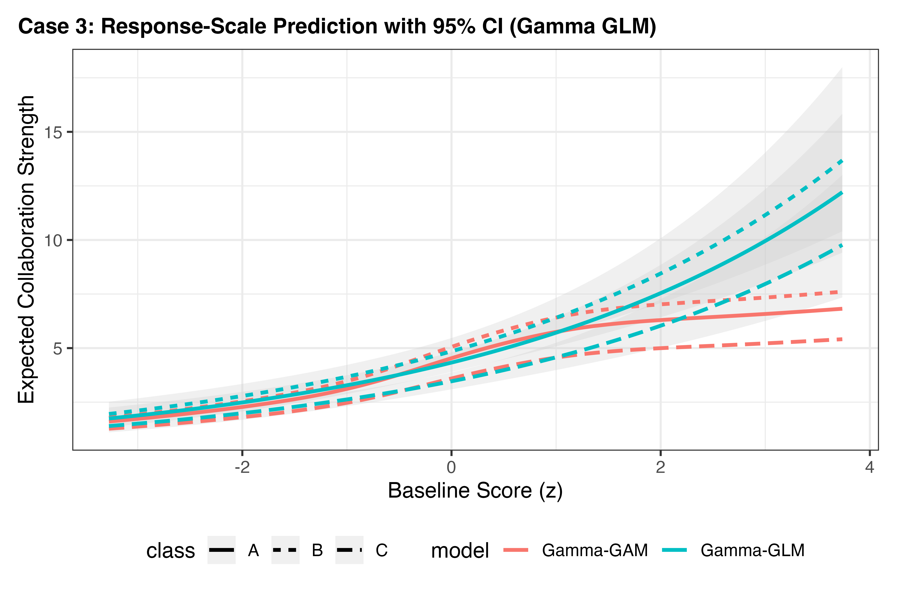
図の読み方:
- y 軸: 期待協働強度（正の連続値）。
- Gamma-GLM と Gamma-GAM の曲線が近い: log スケールでの線形仮定が妥当。GAM は不要。
- クラス間の曲線間隔: クラスの違いが協働強度にどの程度影響しているかを示します。
コード
sjPlot::plot_model(
m_pos_gamma_glm,
type = "pred",
terms = c("baseline_score_sc", "class"),
show.data = FALSE
)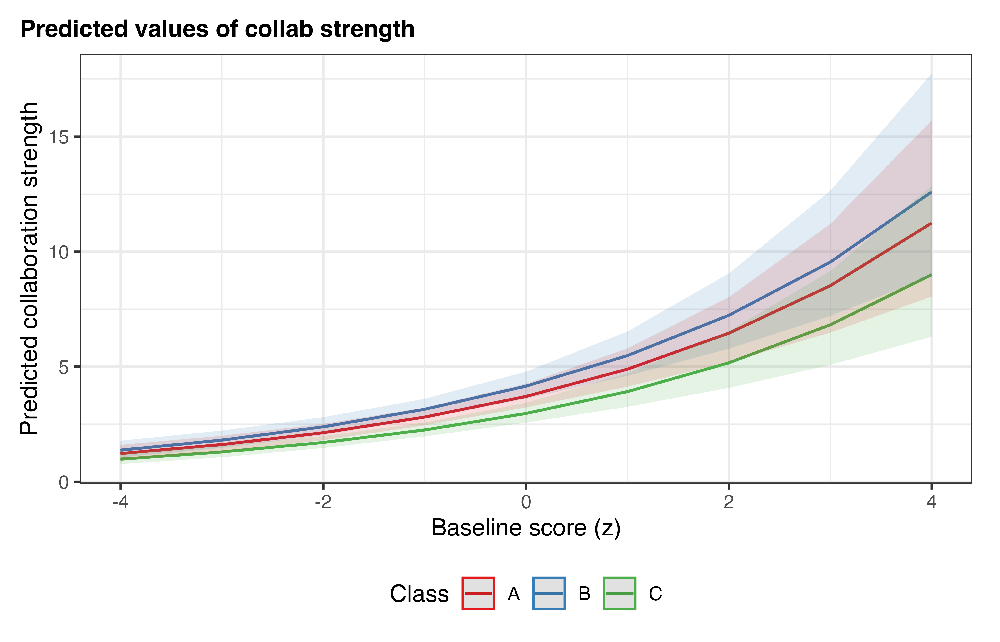
14.4 下位検定（Case 3: class / proficiency）
class（3水準）と proficiency（3水準）について、 各水準の期待協働強度（応答スケール）とペア間の差を emmeans で算出します。
コード
emm_class_pos <- emmeans(m_pos_gamma_glm, ~ class, type = "response")
emm_prof_pos <- emmeans(m_pos_gamma_glm, ~ proficiency, type = "response")
as.data.frame(emm_class_pos) |>
gt() |>
tab_header(title = "Case 3: EMMs for Class (response scale)")| Case 3: EMMs for Class (response scale) | |||||
| class | response | SE | df | lower.CL | upper.CL |
|---|---|---|---|---|---|
| A | 12.883053 | 1.569538 | 54 | 10.091151 | 16.44739 |
| B | 9.337121 | 1.254136 | 54 | 7.132831 | 12.22261 |
| C | 8.638799 | 1.002887 | 54 | 6.844977 | 10.90272 |
コード
pairs(emm_class_pos, adjust = "holm") |>
as.data.frame() |>
gt() |>
tab_header(title = "Case 3: Pairwise (Class, Holm)")| Case 3: Pairwise (Class, Holm) | ||||||
| contrast | ratio | SE | df | null | t.ratio | p.value |
|---|---|---|---|---|---|---|
| A / B | 1.379767 | 0.2310500 | 54 | 1 | 1.9223864 | 0.11967801 |
| A / C | 1.491301 | 0.2460994 | 54 | 1 | 2.4217749 | 0.05649904 |
| B / C | 1.080836 | 0.1919486 | 54 | 1 | 0.4377116 | 0.66334115 |
コード
as.data.frame(emm_prof_pos) |>
gt() |>
tab_header(title = "Case 3: EMMs for Proficiency (response scale)")| Case 3: EMMs for Proficiency (response scale) | |||||
| proficiency | response | SE | df | lower.CL | upper.CL |
|---|---|---|---|---|---|
| A2 | 7.011252 | 1.164335 | 54 | 5.025740 | 9.781176 |
| B1 | 13.339159 | 1.143770 | 54 | 11.232317 | 15.841182 |
| B2 | 11.111204 | 1.514163 | 54 | 8.454865 | 14.602108 |
コード
pairs(emm_prof_pos, adjust = "holm") |>
as.data.frame() |>
gt() |>
tab_header(title = "Case 3: Pairwise (Proficiency, Holm)")| Case 3: Pairwise (Proficiency, Holm) | ||||||
| contrast | ratio | SE | df | null | t.ratio | p.value |
|---|---|---|---|---|---|---|
| A2 / B1 | 0.5256142 | 0.1000722 | 54 | 1 | -3.378246 | 0.004079394 |
| A2 / B2 | 0.6310074 | 0.1348557 | 54 | 1 | -2.154449 | 0.071367810 |
| B1 / B2 | 1.2005143 | 0.1947310 | 54 | 1 | 1.126652 | 0.264871713 |
EMMs テーブルの ratio 列が 1 からどれだけ離れているかが、群間差の実質的な大きさを示します。 Holm 補正後の p 値で有意性を判断してください。
14.5 診断
コード
gam.check(m_pos_gamma_gam)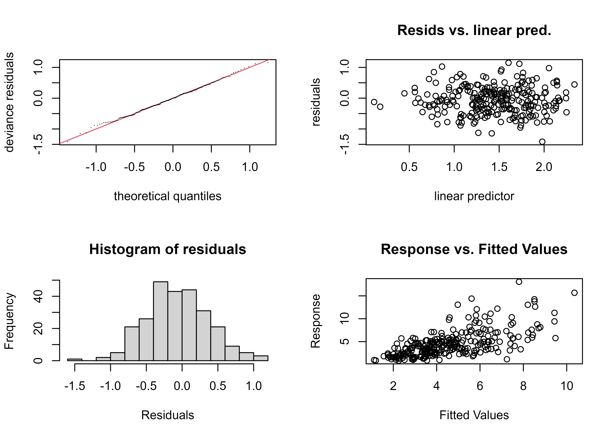
Method: REML Optimizer: outer newton
full convergence after 13 iterations.
Gradient range [-4.939754e-05,2.304002e-05]
(score 193.857 & scale 0.2600677).
Hessian positive definite, eigenvalue range [4.939467e-05,30.54133].
Model rank = 12 / 12
Basis dimension (k) checking results. Low p-value (k-index<1) may
indicate that k is too low, especially if edf is close to k'.
k' edf k-index p-value
s(baseline_score_sc) 7.000 0.757 1.11 0.86コード
concurvity(m_pos_gamma_gam, full = FALSE)$worst
para s(baseline_score_sc)
para 1.000000e+00 1.050715e-26
s(baseline_score_sc) 1.078138e-26 1.000000e+00
$observed
para s(baseline_score_sc)
para 1.000000e+00 1.802283e-34
s(baseline_score_sc) 1.078138e-26 1.000000e+00
$estimate
para s(baseline_score_sc)
para 1.000000e+00 7.633183e-29
s(baseline_score_sc) 1.078138e-26 1.000000e+00k-index と concurvity を確認します。判断基準はケース1・2と同じです。
コード
performance::check_collinearity(m_pos_gamma_glm)# Check for Multicollinearity
Low Correlation
Term VIF VIF 95% CI adj. VIF Tolerance Tolerance 95% CI
baseline_score_sc 1.16 [1.03, 1.96] 1.08 0.86 [0.51, 0.97]
class 1.27 [1.08, 1.94] 1.06 0.79 [0.52, 0.93]
proficiency 1.14 [1.02, 2.04] 1.03 0.88 [0.49, 0.98]VIF の閾値はケース1と同じ（< 3: 安全、3-5: 注意、> 5: 懸念）。
OLS と Gamma GLM の check_model() を並べて比較します。 Gamma が OLS より良い診断結果を示していれば、分布の選択は妥当です。
コード
performance::check_model(m_pos_lm)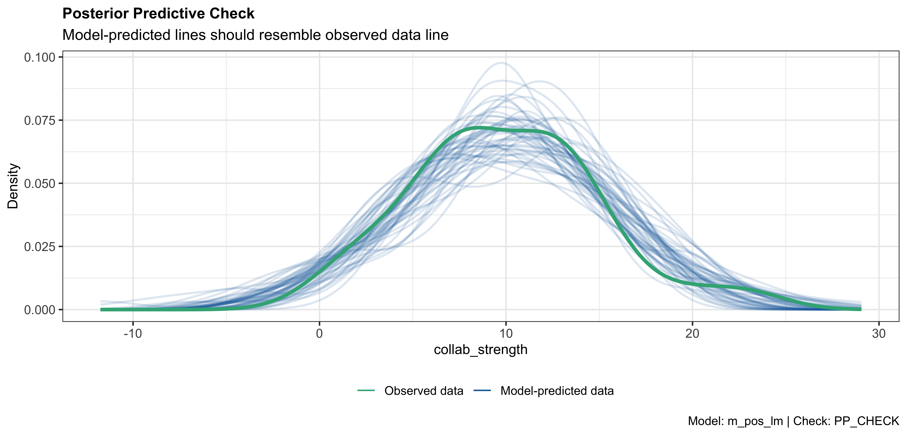
コード
performance::check_model(m_pos_gamma_glm)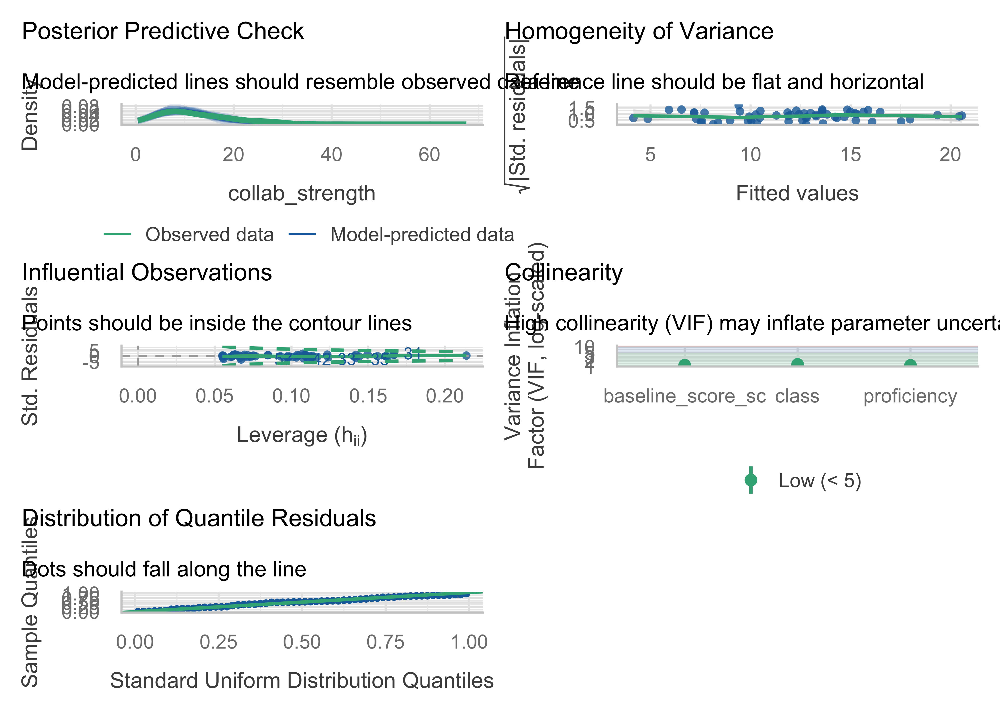
コード
performance::check_model(m_pos_gamma_gam)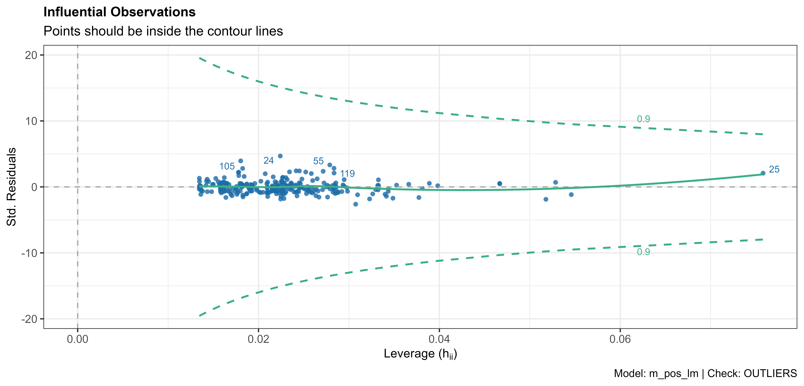
特に注目すべき点:
- OLS の残差プロット: 残差が漏斗状に広がっていれば、分散が一定でない（不等分散）ことを示し、Gamma への切り替えを支持します。
- Gamma の Posterior predictive check: 生成データが実データの右裾の分布を再現できていれば、Gamma の仮定は妥当です。
実務メモ
- Gamma(link = log) では、係数の指数変換が「何倍か」を意味する。
- 非線形が弱い場合は GLM で十分。GAM は必要最小限で使う。
15 6章への接続: モデル比較とランダム効果選択（最短実装）
この節は分析パイプラインで最も重要な判断を含む
5章で GLM/GAM の適合と分布選択が決まった後、データ構造が独立性を崩しているかを判断します。 助言ネットワークデータでは、同じ学習者が送信者として 29 回、受信者として 29 回登場します。 この依存構造を無視したまま GLM の結果を報告すると、標準誤差が過小になり偽陽性が増えます。
5章で GLM/GAM の判断ができたら、次に確認すべきは 「観測の独立性が崩れていないか」です。学習者・項目の反復がある場合は、 GLMM を候補に含めて比較します(Baayen ほか, 2008; Barr ほか, 2013; Jaeger, 2008; Meteyard & Davies, 2020)。
実務では次の順序が安定です。
- まず GLM（固定効果のみ）を作る。
- ランダム切片（例:
from/to）を追加した GLMM を作る。 - 必要ならランダム傾きを試す。
compare_performance()、anova(..., test="Chisq")、isSingular()を併用して採否を決める。
以下で5つの候補モデルを当てはめます。
m_bridge_glm: ランダム効果なし（5章の基準モデル）m_bridge_from: 送信者のランダム切片のみ（送信者ごとの助言傾向の違いを許容）m_bridge_to: 受信者のランダム切片のみ（受信者ごとの「求められやすさ」の違いを許容）m_bridge_ri: 送信者 + 受信者の交差ランダム切片（両方を同時に考慮）m_bridge_rs: 送信者のランダム傾き + 受信者のランダム切片（same_class効果が送信者ごとに異なることを許容）
コード
f_bridge <- tie ~ same_class + prof_gap + score_from_sc + score_to_sc + score_gap
m_bridge_glm <- glm(
f_bridge,
family = binomial(link = "logit"),
data = dat_bin
)
m_bridge_from <- lme4::glmer(
update(f_bridge, . ~ . + (1 | from)),
family = binomial(link = "logit"),
data = dat_bin,
control = lme4::glmerControl(
optimizer = "bobyqa",
optCtrl = list(maxfun = 2e5)
)
)
m_bridge_to <- lme4::glmer(
update(f_bridge, . ~ . + (1 | to)),
family = binomial(link = "logit"),
data = dat_bin,
control = lme4::glmerControl(
optimizer = "bobyqa",
optCtrl = list(maxfun = 2e5)
)
)
m_bridge_ri <- lme4::glmer(
update(f_bridge, . ~ . + (1 | from) + (1 | to)),
family = binomial(link = "logit"),
data = dat_bin,
control = lme4::glmerControl(
optimizer = "bobyqa",
optCtrl = list(maxfun = 2e5)
)
)
m_bridge_rs <- lme4::glmer(
update(f_bridge, . ~ . + (1 + same_class | from) + (1 | to)),
family = binomial(link = "logit"),
data = dat_bin,
control = lme4::glmerControl(
optimizer = "bobyqa",
optCtrl = list(maxfun = 2e5)
)
)
performance::compare_performance(
m_bridge_glm,
m_bridge_from,
m_bridge_to,
m_bridge_ri,
m_bridge_rs
) |>
gt() |>
tab_header(title = "Bridge: GLM vs GLMM Candidates")Random effect variances not available. Returned R2 does not account for random effects.| Bridge: GLM vs GLMM Candidates | |||||||||||||||||
| Name | Model | AIC | AIC_wt | AICc | AICc_wt | BIC | BIC_wt | RMSE | Sigma | Log_loss | Score_log | Score_spherical | R2_conditional | R2_marginal | ICC | R2_Tjur | PCP |
|---|---|---|---|---|---|---|---|---|---|---|---|---|---|---|---|---|---|
| m_bridge_glm | glm | 767.2034 | 0.0008049832 | 767.3007 | 0.000833985 | 795.8143 | 0.0320509471 | 0.3678414 | 1 | 0.4340249 | -30.62943 | 0.008078869 | NA | NA | NA | 0.0707262 | 0.7292497 |
| m_bridge_from | glmerMod | 763.9478 | 0.0040994387 | 764.0777 | 0.004178475 | 797.3273 | 0.0150422671 | 0.3583169 | 1 | 0.4146014 | -30.45482 | 0.007789866 | 0.1663997 | 0.1190069 | 0.05379473 | NA | NA |
| m_bridge_to | glmerMod | 756.2256 | 0.1947958339 | 756.3555 | 0.198551451 | 789.6051 | 0.7147737049 | 0.3540599 | 1 | 0.4038261 | -30.83709 | 0.004133576 | 0.1912066 | 0.1117708 | 0.08943166 | NA | NA |
| m_bridge_ri | glmerMod | 753.6577 | 0.7033767380 | 753.8250 | 0.703684718 | 791.8057 | 0.2378547123 | 0.3454336 | 1 | 0.3862866 | -31.02272 | 0.005517481 | 0.2305489 | 0.1123040 | 0.13320425 | NA | NA |
| m_bridge_rs | glmerMod | 757.6217 | 0.0969230063 | 757.8778 | 0.092751372 | 805.3066 | 0.0002783687 | 0.3452250 | 1 | 0.3861714 | -31.03739 | 0.005299540 | NA | 0.1262437 | NA | NA | NA |
コード
anova(m_bridge_from, m_bridge_ri, test = "Chisq")Data: dat_bin
Models:
m_bridge_from: tie ~ same_class + prof_gap + score_from_sc + score_to_sc + score_gap + (1 | from)
m_bridge_ri: tie ~ same_class + prof_gap + score_from_sc + score_to_sc + score_gap + (1 | from) + (1 | to)
npar AIC BIC logLik -2*log(L) Chisq Df Pr(>Chisq)
m_bridge_from 7 763.95 797.33 -374.97 749.95
m_bridge_ri 8 753.66 791.81 -368.83 737.66 12.29 1 0.0004554 ***
---
Signif. codes: 0 '***' 0.001 '**' 0.01 '*' 0.05 '.' 0.1 ' ' 1コード
anova(m_bridge_to, m_bridge_ri, test = "Chisq")Data: dat_bin
Models:
m_bridge_to: tie ~ same_class + prof_gap + score_from_sc + score_to_sc + score_gap + (1 | to)
m_bridge_ri: tie ~ same_class + prof_gap + score_from_sc + score_to_sc + score_gap + (1 | from) + (1 | to)
npar AIC BIC logLik -2*log(L) Chisq Df Pr(>Chisq)
m_bridge_to 7 756.23 789.61 -371.11 742.23
m_bridge_ri 8 753.66 791.81 -368.83 737.66 4.5679 1 0.03258 *
---
Signif. codes: 0 '***' 0.001 '**' 0.01 '*' 0.05 '.' 0.1 ' ' 1コード
anova(m_bridge_ri, m_bridge_rs, test = "Chisq")Data: dat_bin
Models:
m_bridge_ri: tie ~ same_class + prof_gap + score_from_sc + score_to_sc + score_gap + (1 | from) + (1 | to)
m_bridge_rs: tie ~ same_class + prof_gap + score_from_sc + score_to_sc + score_gap + (1 + same_class | from) + (1 | to)
npar AIC BIC logLik -2*log(L) Chisq Df Pr(>Chisq)
m_bridge_ri 8 753.66 791.81 -368.83 737.66
m_bridge_rs 10 757.62 805.31 -368.81 737.62 0.036 2 0.9821コード
lme4::isSingular(m_bridge_ri)[1] FALSEコード
lme4::isSingular(m_bridge_rs)[1] TRUEコード
performance::check_model(m_bridge_ri)15.0.1 この出力をどう判断するか
compare_performance() テーブル:
- GLM に比べて GLMM（ランダム切片あり）の AIC が 4 以上小さければ、依存構造の考慮が重要。
- ランダム切片モデル同士（from のみ vs from + to）の差が小さければ、一方で十分かもしれません。
anova() の LRT:
m_bridge_from→m_bridge_riの LRT が有意なら、受信者のランダム効果にも意味がある。m_bridge_ri→m_bridge_rsが非有意なら、ランダム傾きの追加利得は小さい。
isSingular():
FALSEなら構造的に問題なし。TRUEならそのモデルのランダ効果は過剰。シンプルなモデルに戻してください。
5章での判断を6章へつなぐポイント
- 非線形が主課題なら GAM、依存構造が主課題なら GLMM。
- どちらも疑われる場合は、まず GLMM で依存構造を処理してから GAMM を検討する。
- モデル選択は単一指標ではなく、適合指標・特異適合・理論整合性の3点で判断する。
16 3ケースをどう報告するか（実践テンプレート）
16.1 APA 7 の表記ルール（共通）
- 統計記号はイタリック: M, SD, β, SE, z, t, F, p, R2
- p 値は
p = .032、非常に小さい場合はp < .001 - 区間推定は
95% CI [LL, UL]で表記 - 効果量（OR / IRR / 倍率）を必ず併記
- リンクスケールの係数と応答スケールの図をセットで示す
16.2 ケース別テンプレート（worked example）
Method:
We modeled directed advice ties (0/1) using a binomial GLM with
a logit link as the baseline model. A binomial GAM with REML
estimation and penalized smooth terms (select = TRUE) was also
fitted to assess potential nonlinear effects of continuous
predictors. Model comparison was based on AIC and BIC, with
diagnostics including overdispersion checks (performance package),
collinearity (VIF), and gam.check() for basis dimension adequacy.
Four link functions (logit, probit, cloglog, cauchit) were compared
to verify robustness of conclusions to link specification.Results:
A binomial GLM and GAM were fitted to directed advice ties among
30 learners (870 directed dyads). The GAM did not provide a
substantial improvement over the GLM (ΔAIC < 2), indicating
limited nonlinear gain for baseline-score effects. We therefore
report odds ratios from the GLM.
Same-class membership was positively associated with advice ties,
β = [値], SE = [値], z = [値], p [= 値 or < .001],
OR = [値], 95% CI [[下限], [上限]]. On the response scale,
the predicted probability of an advice tie was [X]% for
different-class dyads and [Y]% for same-class dyads.
Proficiency gap was [positively/not significantly] associated
with advice ties, β = [値], SE = [値], z = [値], p = [値],
OR = [値], 95% CI [[下限], [上限]].査読者チェックリスト:
- 分布族（binomial）とリンク関数（logit）の選択根拠を明記したか？
- GLM と GAM を比較し、GAM の採否理由を説明したか？
- リンクスケール（β, OR）と応答スケール（予測確率）の両方を報告したか？
- 信頼区間を効果量に併記したか？
- 診断結果（過分散・共線性・gam.check）を要約したか？
Method:
Collaboration counts were modeled using generalized linear models
with a log link. A Poisson GLM was fitted first, and overdispersion
was tested using the performance package. Because significant
overdispersion was detected (dispersion ratio = [値], p < .05),
a negative binomial GLM was adopted. A negative binomial GAM with
REML estimation was also fitted to assess nonlinear effects.Results:
The Poisson model showed overdispersion (dispersion ratio = [値],
p [< .001]). A negative binomial model was therefore adopted
(AIC improvement: ΔAIC = [値]).
Same-class pairs had significantly higher expected collaboration
counts than cross-class pairs, β = [値], SE = [値], z = [値],
p [= 値 or < .001], IRR = [値], 95% CI [[下限], [上限]].
On the response scale, expected counts were [X] for cross-class
and [Y] for same-class pairs.査読者チェックリスト:
- Poisson からの出発と過分散テスト結果を報告したか？
- NB への切り替え理由（過分散 + AIC改善）を明記したか？
- IRR と期待カウントの両方を報告したか？
- NB-GLM と NB-GAM の比較結果を説明したか？
Method:
Collaboration strength (sum of edge weights per learner) was
modeled using a Gamma GLM with a log link, which ensures positive
predictions and allows multiplicative interpretation of effects.
An OLS regression (Gaussian family) was fitted as a comparison.
A Gamma GAM with REML estimation was used to assess nonlinear
effects of baseline score.Results:
The Gamma GLM provided better fit than the OLS model (ΔAIC = [値]),
consistent with the right-skewed distribution and mean-variance
relationship observed in collaboration strength.
A 1-SD increase in baseline score was associated with a
multiplicative change in expected collaboration strength,
β = [値], SE = [値], z = [値], p [= 値 or < .001],
exp(β) = [値], 95% CI [[下限], [上限]], indicating a [値]%
[increase/decrease] in expected strength.査読者チェックリスト:
- Gamma 分布と log リンクの選択根拠を説明したか？
- OLS との比較で Gamma の優位性を示したか？
- 倍率（exp(β)）と期待値の両方を報告したか？
- 0 を含むデータの処理について言及したか？
コピペ用1文テンプレート
Binary: 「Same-class membership was associated with higher odds of an advice tie, β = [値], SE = [値], z = [値], p [= 値], OR = [値], 95% CI [[下限], [上限]].」
Count: 「Same-class pairs had [値] times the expected collaboration count of cross-class pairs, β = [値], SE = [値], z = [値], p [= 値], IRR = [値], 95% CI [[下限], [上限]].」
Positive: 「A 1-SD increase in baseline score was associated with a [値]-fold change in expected collaboration strength, β = [値], SE = [値], z = [値], p [= 値], exp(β) = [値], 95% CI [[下限], [上限]].」
DHARMa について
本章（5章）は GLM/GAM が中心のため、残差診断は check_model(), gam.check(), concurvity() を主に用いています。 DHARMa は階層構造を含む GLMM の残差診断で特に有効なため、 6章で本格的に使用しています。
17 トラブルシューティング（実務で詰まりやすい点）
family の不一致
症状: モデルは収束するが、診断プロットが全面的に破綻。予測値が理論上ありえない範囲に出る。
原因: outcome の型（0/1, count, positive continuous）と family が合っていない。
修正: 以下の対応表を確認してください。
| Outcome | 正しい family | よくある間違い |
|---|---|---|
| 0/1 | binomial |
gaussian（OLS） |
| 0以上の整数 | poisson or nb() |
gaussian |
| 正の連続量 | Gamma(link="log") |
gaussian |
過分散の見落とし
症状: Poisson GLM の係数が有意だが、NB に切り替えると非有意になる。
原因: Poisson は「平均 = 分散」を仮定するため、実際の分散が大きい場合に SE が過小評価される。
修正: count データでは必ず check_overdispersion() を最初に実行。dispersion ratio > 1 かつ有意なら NB に切り替え。
GAM の
k が不足
症状: gam.check() で k-index が 0.8 未満、p 値が有意。
原因: 基底次元が小さすぎて、データの非線形パターンを捉えきれていない。
修正: k を倍に増やして再当てはめ（例: k = 8 → k = 16）。k-index ≈ 1 になるまで調整。ただし k をデータ数以上にはしない。
係数の解釈を混同する
症状: 「OR = 2 だから確率が2倍」と誤解する。
原因: OR はオッズの比であり、確率の比ではない。ベースラインの確率によって、同じ OR でも確率の変化幅は大きく異なる。
修正: 必ず応答スケール（予測確率 / 期待カウント / 期待値）を併記する。OR / IRR / 倍率だけで報告しない。
完全分離・準完全分離（binary GLM）
症状: 一部の係数が極端に大きい（例: 15〜20以上）。SE が非常に大きいか Inf。収束警告が出る。
原因: ある予測子の値でアウトカムが完全に 0 または 1 に分かれてしまう。
修正: (1) 該当する予測子のカテゴリを統合、(2) Firth のペナルティ付き尤度（brglm2 パッケージ）を検討、(3) サンプルサイズを増やす。
Gamma GLM でゼロ値エラー
症状: Error in eval(family$initialize): y values must be > 0
原因: Gamma 分布は厳密に正の値のみをモデル化するため、0 を含むデータでは使えない。
修正: (1) 小さな定数を加える（例: collab_strength + 0.001）、(2) Tweedie 分布（tweedie() in mgcv）を検討、(3) 0 を含む場合はハードルモデルを検討。
GAM の edf が k-1 に張り付く
症状: gam.check() で edf がほぼ k-1 と一致。
原因: 基底次元の上限まで平滑が使われており、これ以上の柔軟性が必要だが k が不足している。
修正: k を大きくして再当てはめ。edf が k-1 に張り付かなくなるまで増やす。
18 発展学習（読書順）
- GLM の原点: Nelder & Wedderburn (1972)
- GAM の基礎と実装: Hastie & Tibshirani (1990); Wood (2017); Wood (2020)
- 平滑化推定（REML）の理論: Wood (2011)
- 言語データへの応用: Winter & Wieling (2016); Pedersen ほか (2019); Wirtz & Pfenninger (2025)
- リンク関数の一次資料: R Core Team (2026a); R Core Team (2026c); Yee (2026); Prentice & Gloeckler (1978)
- 実装リファレンス: R Core Team (2026b); Wood (2026)
- ハンズオン補助: UCLA Statistical Consulting Group (2026a); UCLA Statistical Consulting Group (2026c); UCLA Statistical Consulting Group (2026b)